import arviz as az
import bambi as bmb
import matplotlib.pyplot as plt
import numpy as np
import pandas as pd
import pymc as pm
import pytensor
import pytensor.tensor as pt
from scipy.special import gamma as gamma_func
from scipy.stats import weibull_min
import warnings
warnings.filterwarnings("ignore", category=FutureWarning)Continuous time hazards and survival analysis
From discrete to continuous time
In this notebook we will explore survival modelling techniques in the continuous time formulation. This modelling strategy is often computationally quite efficient because it allows you to explicitly handle censored data without exploding the dataset size via person-period transformations. The data for some subjects is “censored” if there is no event or state-change recorded for those subjects. If we don’t handle this aspect of the sample data correctly we risk skewing our conclusions.
Before we get to the applied sections, we need to establish some theoretical ground. We will:
- Distinguish proportional hazards from accelerated failure time interpretations
- Outline the Weibull as the canonical parametric family for survival modelling
- Describe how parametric models handle censoring
Once this ground is established, we turn to practice. First with a simulation study that recovers known parameters, then with a people analytics example modelling time-to-attrition.
In the companion notebook on discrete-time survival, we showed how to approach survival analysis by discretizing time into periods and fitting binary regression models with a cloglog link. That approach works well when time is naturally discrete and you want maximum flexibility in the baseline hazard shape, but it requires expanding data to person-period format.
When continuous time is more natural, parametric continuous-time models offer a different set of trade-offs:
- Fewer parameters: A Weibull model describes the entire baseline hazard with just two numbers (shape and scale)
- Interpolation and extrapolation: Smooth hazard functions can predict at any time point, not just observed periods
- Direct probabilistic interpretation: The likelihood is defined on the continuous time axis, no discretization needed
- Efficiency: No person-period expansion. Each subject contributes one row
The cost is that we must choose a parametric family for the baseline hazard. If we choose poorly, the model is misspecified. This notebook explores these trade-offs. We will step through how to model accumulating risk with various parametric families, culminating in an example of competing risks survival models.
Two frameworks for covariate effects
Before fitting any models, we need to understand a conceptual fork in the road. There are two fundamentally different ways to think about how covariates affect survival. In the discrete time formulation we focused on the proportional hazards interpretation, however when shifting to continuous time distributional models the accelerated failure time view becomes available.
ImportantProportional hazards (PH) vs. accelerated failure time (AFT)
Proportional Hazards (PH): Covariates act multiplicatively on the hazard function. A treatment that halves the hazard does so at every time point. The hazard function \(h(t)\) — the instantaneous rate of event occurrence at time \(t\), given survival to \(t\) — for subject \(i\) is:
\[ h(t \mid \boldsymbol{X}_i) = h_0(t) \cdot \exp(\boldsymbol{X}_i \boldsymbol{\beta}) \]
Coefficients are log hazard ratios: \(\exp(\beta_j)\) tells you the factor by which the hazard is multiplied for a one-unit increase in \(X_j\). This was the interpretation of coefficients we discussed in the discrete time formulations of survival modelling.
Accelerated Failure Time (AFT): Covariates act multiplicatively on the time scale. A treatment that doubles survival time “stretches” the time axis by a factor of 2. For the Weibull case, the model is:
\[T_i \sim \text{Weibull}(\alpha, \sigma_i), \qquad \log(\sigma_i) = \beta_0 + X_i \gamma\]
where \(\alpha\) is the shape parameter (shared across subjects, estimated from data) and \(\sigma_i\) is the per-subject scale determined by covariates. Coefficients are log time ratios: \(\exp(\gamma_j)\) tells you the factor by which survival time is multiplied for a one-unit increase in \(X_j\).
The key difference:
- In PH, a positive coefficient increases hazard (bad for survival)
- In AFT, a positive coefficient increases survival time (good for survival)
- PH operates on the hazard (vertical axis); AFT operates on time (horizontal axis)
These two frameworks sometimes coincide. For the Weibull distribution, and only for the Weibull among standard parametric families, the same model can be written in both PH and AFT form. The exponential is a special case of the Weibull, so it also has this dual representation. For other distributions (log-normal, log-logistic), only the AFT form applies.
Bambi’s family="weibull" with link="log" fits the AFT parameterization. We’ll see how to convert to PH interpretation later.
We are still modelling risk accumulation
Survival analysis models events as the outcome of an underlying risk accumulation process evolving over time. At each moment, covariates influence the rate at which risk increases, bringing the system closer to a latent transition threshold. Continuous-time models represent the accumulation of risk directly through the hazard and cumulative hazard functions, although these are now derived directly from the PDF and CDF of the parametric distribution.
This is an extra layer of abstraction, and often prevents people from “getting” survival analysis. Not only do you need to understand the idea of latent hazards, but you must work through the seemingly opaque mathematical abstractions of density functions! This is a barrier to understanding, but the core idea is simple: a single parametric distribution gives you the density, survival function, and hazard simultaneously. Choose the distribution, and all three quantities follow.
To gain intuition about these mathematical abstractions it is useful to focus on the histogram of time-to-event distributions. The histogram is a concrete object of study that is naturally translated into an empirical cumulative density function (ECDF). This gives us the proportion of observed events that have occurred by time \(t\). This is an approximation of the parametric CDF which (if appropriate to the data) can be translated into the hazard quantities we need for survival modelling. It’s a conceptual hook, not an exact identity. The ECDF will be biased unless we are able to handle censoring in the observed data. We’ll see how to adjust for this issue below using the properties of the continuous time distribution.
The Weibull distribution: shape and scale
One benefit of parametric approaches to survival modelling is that we can sample and plot the distributional assumptions. Usually with no more than two parameters we can explore a range of time-to-event distributions, and then the questions becomes more applied. Which is the appropriate parametric phrasing of our problem?
Why the Weibull?
The Weibull distribution is the workhorse of parametric survival analysis because it is flexible enough to capture three qualitatively different hazard patterns with just two parameters. There are a number of different ways to parameterize the Weibull distribution. The key point is that there is a shape parameter than controls the accumulation of risk.
- Shape \(\alpha < 1\): Decreasing hazard (early failures, then stabilization. Think of infant mortality or burn-in failures)
- Shape \(\alpha = 1\): Constant hazard (the exponential distribution is a memoryless process)
- Shape \(\alpha > 1\): Increasing hazard (wear-out, aging, accumulated damage)
The probability density, survival, and hazard functions used in PyMC and Bambi:
\[f(t) = \frac{\alpha}{\sigma}\left(\frac{t}{\sigma}\right)^{\alpha - 1} \exp\left(-\left(\frac{t}{\sigma}\right)^{\alpha}\right)\]
\[S(t) = \exp\left(-\left(\frac{t}{\sigma}\right)^{\alpha}\right), \qquad h(t) = \frac{\alpha}{\sigma}\left(\frac{t}{\sigma}\right)^{\alpha - 1}\]
where \(\alpha\) is the shape parameter, \(\sigma\) is the scale parameter, and \(h(t)\) is the hazard function. The scale sets “how long” things take; the shape determines “how the risk changes over time.”
With these properties we plot a range of different types of risk accumulation phenomena.
NoteA note on notation
This notebook uses standard survival analysis notation, which differs from Bambi’s internal parameterization. The key symbols are:
| Notebook | Meaning | Bambi equivalent |
|---|---|---|
| \(\alpha\) | Weibull shape parameter | alpha |
| \(\sigma\) (or \(\sigma_i\)) | Weibull scale parameter | beta (internal), computed from mu and alpha |
| \(h(t)\) | Hazard function (instantaneous event rate) | — (derived quantity) |
| \(\beta_0\) | Intercept of the linear predictor for \(\log(\sigma)\) | Part of the linear predictor targeting Bambi’s mu |
The potential point of confusion is the intercept. In the AFT literature, the intercept is commonly denoted \(\mu\), as in \(\log(\sigma_i) = \mu + X_i \beta\). However, in Bambi mu denotes the mean of the Weibull distribution, i.e. \(E[T] = \sigma \cdot \Gamma(1 + 1/\alpha)\). Bambi internally converts this mean to the scale via beta = mu / gamma(1 + 1/alpha). To avoid this collision, we use \(\beta_0\) for the intercept throughout this notebook. When you see mu in Bambi’s model summary, it refers to the expected survival time on the link scale, not the log-scale intercept \(\beta_0\).
We use \(\beta_0\) rather than the more traditional \(\mu\) for the intercept to stay neutral between the literature and Bambi’s conventions. The remaining notation (\(\sigma\), \(\alpha\), \(h(t)\)) is standard and maps directly to the simulation code.
Code
fig, axes = plt.subplots(1, 3, figsize=(15, 4), layout="constrained")
t = np.linspace(0.01, 5, 200)
scale = 2.0
for alpha, ax, title in zip(
[0.5, 1.0, 2.0],
axes,
[
r"Decreasing Hazard ($\alpha=0.5$)",
r"Constant Hazard ($\alpha=1.0$)",
r"Increasing Hazard ($\alpha=2.0$)",
],
):
# Hazard: (alpha/sigma) * (t/sigma)^(alpha-1)
hazard = (alpha / scale) * (t / scale) ** (alpha - 1)
survival = np.exp(-((t / scale) ** alpha))
ax.plot(t, hazard, "b-", linewidth=2, label="Hazard $h(t)$")
ax.plot(t, survival, "r--", linewidth=2, label="Survival $S(t)$")
ax.set_xlabel("Time")
ax.set_title(title, fontsize=11)
ax.legend(fontsize=9)
ax.grid(True, alpha=0.3)
ax.set_ylim(0, 2.5)
axes[0].set_ylabel("Value")
plt.suptitle("Weibull Hazard Shapes", fontsize=13, fontweight="bold")
plt.show()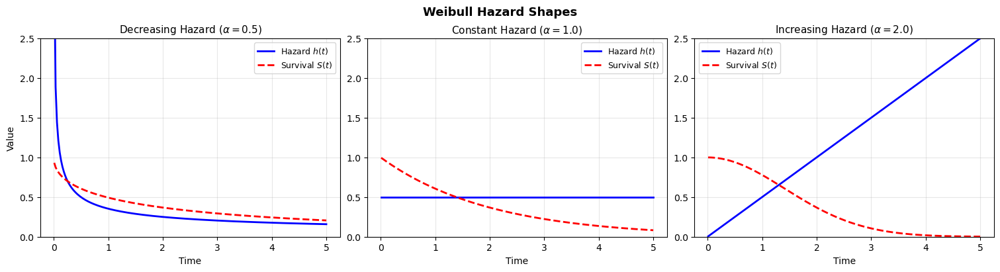
The shape parameter is what makes the Weibull so useful: it lets the data tell us whether risk is increasing, decreasing, or constant over time. The exponential model forces \(\alpha = 1\) — a strong and often unrealistic assumption. So we can move between different views of accumulating risk with these parametric families, but how do we handle censored data?
How parametric models handle censoring
One major advantage of continuous-time parametric models is that censoring is handled directly in the likelihood, without expanding the dataset or imputing missing event times.
Suppose for each individual we observe:
- \(t_i\) = observed time
- \(\delta_i\) = event indicator
- \(\delta_i = 1\) if the event occurred
- \(\delta_i = 0\) if the observation is right-censored
- \(\delta_i = 1\) if the event occurred
In a parametric survival model, we specify a probability density function \(f(t \mid \theta)\) and corresponding survival function \(S(t \mid \theta)\).
Likelihood contribution
Each individual contributes:
If the event is observed (\(\delta_i = 1\)):
\[ f(t_i \mid \theta) \]If the observation is right-censored (\(\delta_i = 0\)):
\[ S(t_i \mid \theta) \]
Why? Because censoring means:
The event time exceeds \(t_i\).
And by definition:
\[ P(T > t_i) = S(t_i) \]
So the full likelihood is:
\[ L(\theta) = \prod_{i=1}^n \left[ f(t_i \mid \theta) \right]^{\delta_i} \left[ S(t_i \mid \theta) \right]^{1 - \delta_i} \]
This is sometimes called the censored likelihood or partial observation likelihood.
Intuition
- Events contribute density mass at the observed time.
- Censored observations contribute probability mass to the right of the observed time.
- No data expansion is required.
- No bias is introduced, provided the censoring is non-informative.
This is fundamentally different from the naive ECDF, which treats censored observations as if the event never occurred and therefore produces inconsistent estimates of the true distribution.
Simulation: understanding the AFT parameterization
We’re now equipped with all the pieces to understand survival modelling in continuous time settings. Let’s make it more concrete by simulating data from an AFT process.
Generating data from a known AFT model
To build intuition, we first simulate data from a Weibull AFT model with known parameters, then check that we can recover them. This validation step is essential before trusting any model on real data.
The AFT model says that each subject’s survival time is drawn from a Weibull distribution whose scale depends on their covariates, while the shape is shared across all subjects:
\[T_i \sim \text{Weibull}(\alpha, \sigma_i), \qquad \log(\sigma_i) = \beta_0 + X_i\beta\]
The model estimates two things: the shape \(\alpha\) (which controls how hazard evolves over time i.e. increasing, constant, or decreasing) and the covariate coefficients \(\beta\) (which shift the per-subject scale). Positive \(\beta\) values increase the scale, which stretches survival times implying the subject lives longer.
TipThe AFT error-term notation
The AFT literature often writes the same model as \(\log(T_i) = \beta_0 + X_i\beta + \sigma \epsilon_i\), where \(\epsilon_i\) follows a standard extreme value distribution and \(\sigma = 1/\alpha\). This is mathematically equivalent. Taking the log of a Weibull random variable produces an extreme value variate, and the Weibull shape \(\alpha\) determines how dispersed these log-times are. We prefer the distributional form above because it maps directly to the code and avoids the potentially confusing \(\sigma \epsilon_i\) product notation.
In the simulation code below, this mapping is concrete:
log_scale = intercept_true + beta_treatment * treatment[i] + beta_age * age[i]computes \(\log(\sigma_i) = \beta_0 + X_i\beta\)scale_i = np.exp(log_scale)exponentiates to get the per-subject Weibull scale \(\sigma_i\)weibull_min.rvs(c=shape_true, scale=scale_i)draws \(T_i \sim \text{Weibull}(\alpha, \sigma_i)\)
The shape shape_true (\(\alpha = 2\)) is the same for every subject. It’s a global parameter, while the scale varies with covariates.
NoteCan \(\alpha\) depend on covariates too?
In principle, yes! You could let the shape vary across subjects, so that different groups have qualitatively different hazard trajectories (e.g., increasing hazard for one group, decreasing for another). This falls under the umbrella of distributional regression (sometimes called GAMLSS), where every parameter of the response distribution can have its own linear predictor.
In practice, the standard AFT and PH models keep \(\alpha\) shared. This is partly convention, partly pragmatism: estimating covariate effects on the shape requires considerably more data, and interpretation becomes harder. You’re then no longer just shifting survival times, but changing the character of the hazard over time. For this notebook we stick with the standard shared-\(\alpha\) formulation, but it’s worth knowing the extension exists when you have strong reason to believe hazard shapes differ across groups.
rng = np.random.default_rng(1234)
# Sample size and covariates
n = 1000
treatment = rng.binomial(1, 0.5, n)
age = rng.normal(0, 1, n)
# True AFT parameters
shape_true = 2.0 # Weibull shape (hazard increases over time)
beta_treatment = 0.6 # Positive = LONGER survival in AFT
beta_age = -0.4 # Negative = SHORTER survival
intercept_true = 3.0 # Log-scale intercept
# Generate survival times from Weibull AFT
times = []
events = []
max_followup = 50
for i in range(n):
# AFT: covariates shift the log-scale
log_scale = intercept_true + beta_treatment * treatment[i] + beta_age * age[i]
scale_i = np.exp(log_scale)
# Draw from Weibull(shape, scale_i)
time_i = weibull_min.rvs(c=shape_true, scale=scale_i, random_state=rng)
# Administrative censoring at max_followup
if time_i <= max_followup:
times.append(time_i)
events.append(1)
else:
times.append(max_followup)
events.append(0)
df = pd.DataFrame({"time": times, "event": events, "treatment": treatment, "age": age})
print("SIMULATION PARAMETERS")
print("---------------------")
print("True AFT coefficients:")
print(f" Intercept (log-scale) = {intercept_true}")
print(f" beta_treatment = {beta_treatment} (positive = longer survival)")
print(f" beta_age = {beta_age} (negative = shorter survival)")
print(f" shape (alpha) = {shape_true}")
print(f"\nEvents: {df['event'].sum()} ({100*df['event'].mean():.1f}%)")
print(f"Censored: {(1 - df['event']).sum():.0f} ({100*(1-df['event'].mean()):.1f}%)")SIMULATION PARAMETERS
---------------------
True AFT coefficients:
Intercept (log-scale) = 3.0
beta_treatment = 0.6 (positive = longer survival)
beta_age = -0.4 (negative = shorter survival)
shape (alpha) = 2.0
Events: 878 (87.8%)
Censored: 122 (12.2%)Visualizing the AFT effect
The hallmark of an AFT model is that covariates shift survival times horizontally — they stretch or compress the time axis. Compare this to a proportional hazards model, where covariates shift the survival curve vertically (by scaling the hazard).
Code
fig, ax = plt.subplots(figsize=(8, 4), layout="constrained")
ax.hist(
df.loc[df["treatment"] == 0, "time"],
bins=30,
alpha=0.5,
density=True,
label="Control",
color="steelblue",
)
ax.hist(
df.loc[df["treatment"] == 1, "time"],
bins=30,
alpha=0.5,
density=True,
label="Treatment",
color="coral",
)
ax.set_xlabel("Time")
ax.set_ylabel("Density")
ax.set_title("Distribution of Survival Times by Treatment Group")
ax.legend()
ax.grid(True, alpha=0.3)
plt.show()
print("The treated group's distribution is shifted RIGHT along the time axis.")
print(f"The AFT acceleration factor is exp({beta_treatment}) = {np.exp(beta_treatment):.2f}x.")
print("This means treatment multiplies expected survival time by ~1.82.")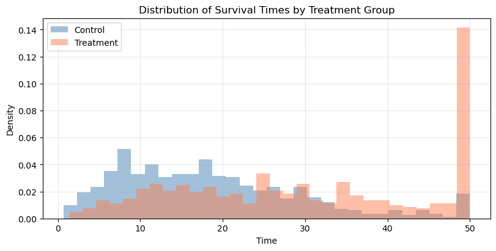
The treated group's distribution is shifted RIGHT along the time axis.
The AFT acceleration factor is exp(0.6) = 1.82x.
This means treatment multiplies expected survival time by ~1.82.Notice how the treatment group’s distribution is shifted rightward (longer times), not just compressed downward. This horizontal shift is the signature of an AFT effect. In a PH model, the curves would have the same shape, but one would be uniformly “pulled down” toward zero.
Fitting parametric models with Bambi
Handling censoring in Bambi
Right-censoring occurs when we observe a subject for some period, but the event hasn’t happened by the end of observation. The subject contributes partial information: we know they survived at least until the censoring time, but not how much longer they would have survived.
In Bambi, we handle this with the censored() function in the formula. We create a column indicating the censoring status:
'none': the event was observed (uncensored)'right': the subject was right-censored (still alive at last observation)
The censored likelihood correctly accounts for this: uncensored observations contribute the density \(f(t)\) to the likelihood, while right-censored observations contribute \(S(t)\) — the probability of surviving past the observed time.
# Create censoring indicator for Bambi
df["censoring"] = np.where(df["event"] == 1, "none", "right")
print("Censoring distribution:")
print(df["censoring"].value_counts())Censoring distribution:
censoring
none 878
right 122
Name: count, dtype: int64Weibull AFT model
We now can specify the Weibull AFT model using a convenient formula syntax and the appropriate link function.
# Fit Weibull AFT model
model_aft = bmb.Model(
"censored(time, censoring) ~ treatment + age", data=df, family="weibull", link="log"
)
model_aft Formula: censored(time, censoring) ~ treatment + age
Family: weibull
Link: mu = log
Observations: 1000
Priors:
target = mu
Common-level effects
Intercept ~ Normal(mu: 0.0, sigma: 3.5428)
treatment ~ Normal(mu: 0.0, sigma: 5.0)
age ~ Normal(mu: 0.0, sigma: 2.5055)
Auxiliary parameters
alpha ~ HalfCauchy(beta: 1.0)Estimating the model with the standard fit call.
idata_aft = model_aft.fit(
chains=4,
random_seed=42,
target_accept=0.95,
idata_kwargs={"log_likelihood": True},
)Initializing NUTS using jitter+adapt_diag...
Multiprocess sampling (4 chains in 4 jobs)
NUTS: [alpha, Intercept, treatment, age]Sampling 4 chains for 1_000 tune and 1_000 draw iterations (4_000 + 4_000 draws total) took 2 seconds.summary_aft = az.summary(idata_aft, var_names=["Intercept", "treatment", "age", "alpha"])
display(summary_aft)
print(f"\nTrue values for comparison:")
print(f" Intercept = {intercept_true}")
print(f" treatment = {beta_treatment}")
print(f" age = {beta_age}")
print(f" alpha = {shape_true}")| mean | sd | hdi_3% | hdi_97% | mcse_mean | mcse_sd | ess_bulk | ess_tail | r_hat | |
|---|---|---|---|---|---|---|---|---|---|
| Intercept | 2.889 | 0.023 | 2.846 | 2.932 | 0.000 | 0.000 | 4983.0 | 2617.0 | 1.0 |
| treatment | 0.552 | 0.035 | 0.488 | 0.620 | 0.001 | 0.001 | 4246.0 | 2834.0 | 1.0 |
| age | -0.392 | 0.019 | -0.426 | -0.357 | 0.000 | 0.000 | 4670.0 | 2522.0 | 1.0 |
| alpha | 1.982 | 0.054 | 1.874 | 2.078 | 0.001 | 0.001 | 4350.0 | 2791.0 | 1.0 |
True values for comparison:
Intercept = 3.0
treatment = 0.6
age = -0.4
alpha = 2.0Which nicely recovers the true data generating parameters.
NoteInterpreting AFT coefficients
The coefficients from a Weibull AFT model with link="log" are log time-acceleration factors:
treatment = 0.6means treatment multiplies survival time by \(\exp(0.6) \approx 1.82\). Treated subjects live about 82% longer in expectation.age = -0.4means a one-SD increase in age multiplies survival time by \(\exp(-0.4) \approx 0.67\). This is a truncation effect. Older subjects have about 33% shorter survival times.
The sign convention is the opposite of proportional hazards: positive AFT coefficients are protective (longer survival), while positive PH coefficients are harmful (higher hazard).
Diagnostics
Before interpreting results, we should check that the sampler converged and mixed well.
az.plot_trace(idata_aft, var_names=["treatment", "age", "alpha"], backend_kwargs={"layout": "constrained"});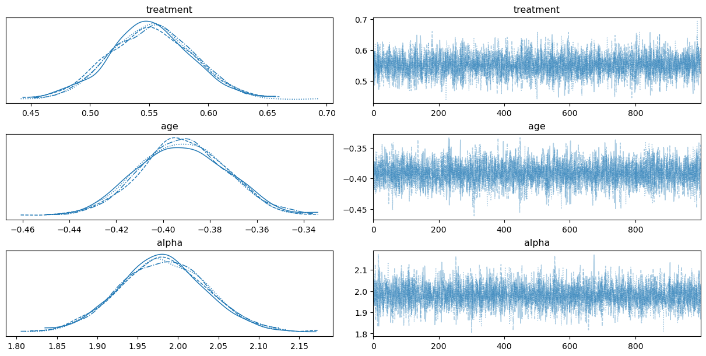
# Check for divergences
divergences = idata_aft.sample_stats["diverging"].sum().values
print(f"Number of divergent transitions: {divergences}")
print(f"All R-hat values < 1.01: {(summary_aft['r_hat'] < 1.01).all()}")Number of divergent transitions: 0
All R-hat values < 1.01: TrueExponential model (nested comparison)
The exponential distribution is a Weibull with shape \(\alpha = 1\), meaning the hazard is constant over time. Fitting an exponential model lets us test whether the data supports time-varying hazard.
model_exp = bmb.Model(
"censored(time, censoring) ~ treatment + age",
data=df,
family="exponential",
link="log",
)
idata_exp = model_exp.fit(chains=4, random_seed=42, idata_kwargs={"log_likelihood": True})Initializing NUTS using jitter+adapt_diag...
Multiprocess sampling (4 chains in 4 jobs)
NUTS: [Intercept, treatment, age]Sampling 4 chains for 1_000 tune and 1_000 draw iterations (4_000 + 4_000 draws total) took 1 seconds.az.summary(idata_exp, var_names=["Intercept", "treatment", "age"])| mean | sd | hdi_3% | hdi_97% | mcse_mean | mcse_sd | ess_bulk | ess_tail | r_hat | |
|---|---|---|---|---|---|---|---|---|---|
| Intercept | 2.916 | 0.046 | 2.828 | 3.002 | 0.001 | 0.001 | 5390.0 | 3032.0 | 1.0 |
| treatment | 0.674 | 0.068 | 0.555 | 0.805 | 0.001 | 0.001 | 5834.0 | 3254.0 | 1.0 |
| age | -0.470 | 0.035 | -0.538 | -0.406 | 0.000 | 0.001 | 5529.0 | 3001.0 | 1.0 |
Model comparison
We compare models using Leave-One-Out cross-validation (LOO-CV), which estimates the out-of-sample predictive accuracy of each model. Lower ELPD (expected log pointwise predictive density) differences indicate worse fit; the best model is ranked first.
compare_df = az.compare({"Weibull": idata_aft, "Exponential": idata_exp}, ic="loo")
compare_df| rank | elpd_loo | p_loo | elpd_diff | weight | se | dse | warning | scale | |
|---|---|---|---|---|---|---|---|---|---|
| Weibull | 0 | -3418.312076 | 4.262484 | 0.000000 | 0.984541 | 34.348914 | 0.000000 | False | log |
| Exponential | 1 | -3651.631794 | 1.262510 | 233.319718 | 0.015459 | 36.047673 | 17.869266 | False | log |
The Weibull model fits substantially better because the true data-generating process has shape \(\alpha = 2\) (increasing hazard). The exponential model, forced to assume constant hazard (\(\alpha = 1\)), cannot capture this pattern. This is a useful diagnostic: if the exponential fits just as well as the Weibull, it suggests the hazard may indeed be roughly constant.
Converting between AFT and PH interpretations
The Weibull duality
The Weibull is unique among parametric survival distributions: the same model can be written in both AFT and PH form. This duality is extremely useful — it means we can fit the model in whichever parameterization is convenient and convert to the other for interpretation.
The relationship between AFT coefficients (\(\beta_{\text{AFT}}\)) and PH coefficients (\(\beta_{\text{PH}}\)) for a Weibull with shape parameter \(\alpha\) is:
\[\beta_{\text{PH}} = -\alpha \cdot \beta_{\text{AFT}}\]
and the corresponding hazard ratio is:
\[\text{HR} = \exp(\beta_{\text{PH}}) = \exp(-\alpha \cdot \beta_{\text{AFT}})\]
This works because the Weibull hazard is \(\lambda(t) = (\alpha / \sigma)(t/\sigma)^{\alpha-1}\), so changing the scale \(\sigma\) by a factor \(\exp(\beta_{\text{AFT}})\) changes the hazard by a factor \(\exp(-\alpha \cdot \beta_{\text{AFT}})\).
WarningThis conversion is Weibull-specific
The AFT-to-PH conversion \(\beta_{\text{PH}} = -\alpha \cdot \beta_{\text{AFT}}\) holds only for the Weibull (including the exponential as a special case with \(\alpha = 1\)). For other distributions like the log-normal or log-logistic, only the AFT interpretation is valid. There is no equivalent PH representation because those distributions do not entail proportional hazards.
# Extract posterior samples
beta_aft_treatment = idata_aft.posterior["treatment"]
alpha = idata_aft.posterior["alpha"]
# Convert AFT to PH scale
beta_ph_treatment = -alpha * beta_aft_treatment
hazard_ratio = np.exp(beta_ph_treatment)
print("CONVERTING AFT TO HAZARD RATIOS")
print("===============================")
print(f"AFT coefficient (posterior mean): {float(beta_aft_treatment.mean()):.3f}")
print(f"Time acceleration factor: {float(np.exp(beta_aft_treatment.mean())):.3f}")
print(f"PH coefficient (posterior mean): {float(beta_ph_treatment.mean()):.3f}")
print(f"Hazard ratio (posterior mean): {float(hazard_ratio.mean()):.3f}")
print()
print("Interpretation (two equivalent views):")
print(
f" AFT: Treatment multiplies survival time by ~{float(np.exp(beta_aft_treatment.mean())):.2f}x"
)
print(f" PH: Treatment multiplies hazard by ~{float(hazard_ratio.mean()):.2f}x")
print()
print("Both are consistent: longer survival <=> lower hazard.")CONVERTING AFT TO HAZARD RATIOS
===============================
AFT coefficient (posterior mean): 0.552
Time acceleration factor: 1.737
PH coefficient (posterior mean): -1.094
Hazard ratio (posterior mean): 0.336
Interpretation (two equivalent views):
AFT: Treatment multiplies survival time by ~1.74x
PH: Treatment multiplies hazard by ~0.34x
Both are consistent: longer survival <=> lower hazard.fig, axes = plt.subplots(1, 2, figsize=(12, 4), layout="constrained")
# AFT scale: time acceleration factor
time_ratio = np.exp(beta_aft_treatment).values.flatten()
axes[0].hist(time_ratio, bins=50, density=True, alpha=0.7, color="steelblue")
axes[0].axvline(
np.exp(beta_treatment),
color="red",
linestyle="--",
linewidth=2,
label=f"True = {np.exp(beta_treatment):.2f}",
)
axes[0].axvline(1.0, color="gray", linestyle=":", linewidth=1, label="No effect")
axes[0].set_xlabel("Time Acceleration Factor exp(β_AFT)")
axes[0].set_title("AFT Interpretation")
axes[0].legend()
# PH scale: hazard ratio
hr = hazard_ratio.values.flatten()
axes[1].hist(hr, bins=50, density=True, alpha=0.7, color="coral")
axes[1].axvline(
np.exp(-shape_true * beta_treatment),
color="red",
linestyle="--",
linewidth=2,
label=f"True = {np.exp(-shape_true * beta_treatment):.2f}",
)
axes[1].axvline(1.0, color="gray", linestyle=":", linewidth=1, label="No effect")
axes[1].set_xlabel("Hazard Ratio exp(β_PH)")
axes[1].set_title("PH Interpretation")
axes[1].legend()
fig.suptitle("Two Views of the Same Treatment Effect", fontsize=13, fontweight="bold");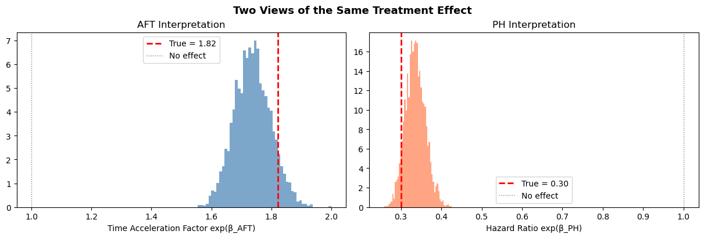
Deriving survival and hazard curves
A fitted parametric model is only useful if we can translate its coefficients back into the quantities that matter: how does the probability of surviving change over time, and how does the instantaneous risk evolve? In this section we derive full survival and hazard curves from the fitted Weibull AFT model using two complementary approaches.
Approach 1: parametric closed-form curves
The great advantage of a parametric model is that the survival and hazard functions have closed-form expressions. For a Weibull AFT model with shape \(\alpha\) and subject-specific scale \(\sigma_i = \exp(\beta_0 + X_i \beta)\), we have:
\[\lambda(t \mid X_i) = \frac{\alpha}{\sigma_i}\left(\frac{t}{\sigma_i}\right)^{\alpha - 1}, \qquad S(t \mid X_i) = \exp\left(-\left(\frac{t}{\sigma_i}\right)^{\alpha}\right)\]
Since we have full posterior samples for \(\alpha\), \(\beta_0\) (intercept), and \(\beta\), we can compute these curves for every posterior draw and then summarize with pointwise means and credible intervals. This propagates all parameter uncertainty into the curve estimates as desired.
Code
def weibull_survival_curves(model, idata, t_grid, covariate_values):
"""
Compute parametric Weibull survival and hazard curves from posterior samples.
Parameters
----------
model : bmb.Model
Fitted Bambi model (used for predict)
idata : az.InferenceData
Fitted model's inference data (must contain 'alpha' and covariate posteriors)
t_grid : array
Time points at which to evaluate the curves
covariate_values : dict
Covariate name -> value pairs for the target profile
Returns
-------
dict with keys 'survival', 'hazard', 'cum_hazard', each of shape (n_draws, n_times),
plus 't' (the time grid)
"""
post = idata.posterior
predictions = model.predict(
idata, kind="response_params", inplace=False, data=pd.DataFrame(covariate_values, index=[0])
)
scale = predictions["posterior"]["mu"].values.flatten()
alpha_samples = post["alpha"].values.flatten() # shape: (n_draws,)
# Broadcast: (n_draws, 1) vs (1, n_times)
scale_2d = scale[:, np.newaxis]
alpha_2d = alpha_samples[:, np.newaxis]
t_2d = t_grid[np.newaxis, :]
# Weibull functions
survival = np.exp(-((t_2d / scale_2d) ** alpha_2d))
hazard = (alpha_2d / scale_2d) * (t_2d / scale_2d) ** (alpha_2d - 1)
cum_hazard = (t_2d / scale_2d) ** alpha_2d
return {"survival": survival, "hazard": hazard, "cum_hazard": cum_hazard, "t": t_grid}Now let’s use this to compare survival curves for treated vs. control subjects, with full posterior uncertainty:
t_grid = np.linspace(0.1, 50, 200)
curves_control = weibull_survival_curves(
model_aft, idata_aft, t_grid, covariate_values={"treatment": 0, "age": 0}
)
curves_treated = weibull_survival_curves(
model_aft, idata_aft, t_grid, covariate_values={"treatment": 1, "age": 0}
)
# Also compute true curves for comparison
scale_control_true = np.exp(intercept_true + beta_treatment * 0 + beta_age * 0)
scale_treated_true = np.exp(intercept_true + beta_treatment * 1 + beta_age * 0)
S_true_control = np.exp(-((t_grid / scale_control_true) ** shape_true))
S_true_treated = np.exp(-((t_grid / scale_treated_true) ** shape_true))
h_true_control = (shape_true / scale_control_true) * (t_grid / scale_control_true) ** (
shape_true - 1
)
h_true_treated = (shape_true / scale_treated_true) * (t_grid / scale_treated_true) ** (
shape_true - 1
)
fig, axes = plt.subplots(2, 3, figsize=(16, 10), layout="constrained")
axes = axes.flatten() # Use only the first row for the three plots
for curves, label, color, S_true, h_true in [
(curves_control, "Control", "steelblue", S_true_control, h_true_control),
(curves_treated, "Treatment", "coral", S_true_treated, h_true_treated),
]:
# Survival
S_mean = curves["survival"].mean(axis=0)
S_lo = np.percentile(curves["survival"], 2.5, axis=0)
S_hi = np.percentile(curves["survival"], 97.5, axis=0)
axes[0].plot(t_grid, S_mean, color=color, linewidth=2, label=f"{label} (estimated)")
axes[0].fill_between(t_grid, S_lo, S_hi, color=color, alpha=0.15)
axes[0].plot(
t_grid,
S_true,
color=color,
linestyle="--",
linewidth=1.5,
alpha=0.7,
label=f"{label} (true)",
)
# Hazard
h_mean = curves["hazard"].mean(axis=0)
h_lo = np.percentile(curves["hazard"], 2.5, axis=0)
h_hi = np.percentile(curves["hazard"], 97.5, axis=0)
axes[1].plot(t_grid, h_mean, color=color, linewidth=2, label=f"{label} (estimated)")
axes[1].fill_between(t_grid, h_lo, h_hi, color=color, alpha=0.15)
axes[1].plot(
t_grid,
h_true,
color=color,
linestyle="--",
linewidth=1.5,
alpha=0.7,
label=f"{label} (true)",
)
# Cumulative hazard
ch_mean = curves["cum_hazard"].mean(axis=0)
ch_lo = np.percentile(curves["cum_hazard"], 2.5, axis=0)
ch_hi = np.percentile(curves["cum_hazard"], 97.5, axis=0)
axes[2].plot(t_grid, ch_mean, color=color, linewidth=2, label=f"{label} (estimated)")
axes[2].fill_between(t_grid, ch_lo, ch_hi, color=color, alpha=0.15)
true_diff_survival = S_true_treated - S_true_control
survival_diff = curves_treated["survival"] - curves_control["survival"]
axes[3].plot(
t_grid,
survival_diff.mean(axis=0),
color="k",
linestyle="--",
linewidth=1.5,
alpha=0.7,
label=f"Survival Diff (estimated)",
)
axes[3].plot(t_grid, true_diff_survival, color="k", linewidth=2, label=f"Survival Diff (true)")
true_diff_hazard = h_true_treated - h_true_control
hazard_diff = curves_treated["hazard"] - curves_control["hazard"]
axes[4].plot(
t_grid,
hazard_diff.mean(axis=0),
color="k",
linestyle="--",
linewidth=1.5,
alpha=0.7,
label=f"Hazard Diff (estimated)",
)
axes[4].plot(t_grid, true_diff_hazard, color="k", linewidth=2, label=f"Hazard Diff (true)")
# Calculate the true cumulative hazard using the exact Weibull formula
ch_true_control = (t_grid / scale_control_true) ** shape_true
ch_true_treated = (t_grid / scale_treated_true) ** shape_true
# Calculate the difference
true_diff_cum_hazard = ch_true_treated - ch_true_control
cum_hazard_diff = curves_treated["cum_hazard"] - curves_control["cum_hazard"]
axes[5].plot(
t_grid,
cum_hazard_diff.mean(axis=0),
color="k",
linestyle="--",
linewidth=1.5,
alpha=0.7,
label=f"Cumulative Hazard Diff (estimated)",
)
axes[5].plot(
t_grid, true_diff_cum_hazard, color="k", linewidth=2, label=f"Cumulative Hazard Diff (true)"
)
axes[0].set_title("Survival $S(t)$", fontsize=12, fontweight="bold")
axes[0].set_ylabel("P(Survival past $t$)")
axes[0].set_ylim(0, 1.05)
axes[1].set_title("Hazard $h(t)$", fontsize=12, fontweight="bold")
axes[1].set_ylabel("Instantaneous Risk")
axes[2].set_title("Cumulative Hazard $H(t)$", fontsize=12, fontweight="bold")
axes[2].set_ylabel("Accumulated Risk")
for ax in axes:
ax.set_xlabel("Time")
ax.legend(fontsize=8, loc="best")
ax.grid(True, alpha=0.3)
fig.suptitle(
"Weibull AFT: Parametric Survival Curves with Posterior Uncertainty",
fontsize=13,
fontweight="bold",
);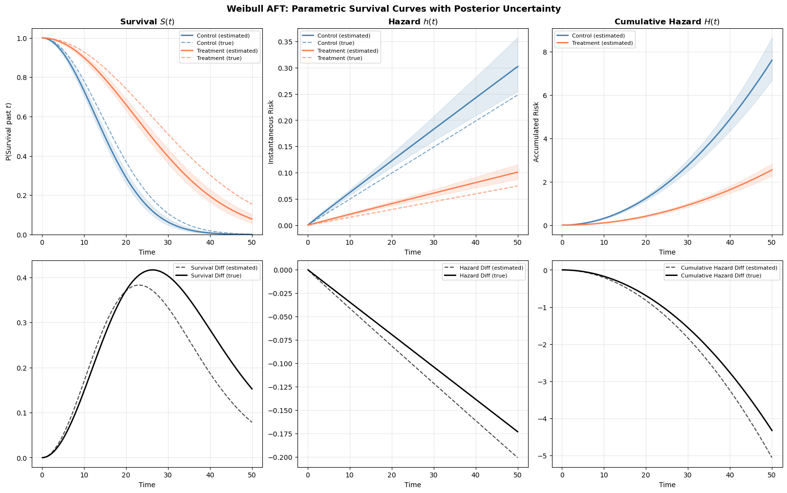
The estimated curves (solid lines with shaded credible bands) closely track the true data-generating curves (dashed lines). Notice how the treatment effect manifests as a horizontal shift: the treated group’s survival curve is displaced rightward, and their hazard curve is displaced rightward and downward. This is the AFT effect in action. The effect of changes in covariates is to stretch the time axis rather than scaling the hazard vertically.
Approach 2: posterior predictive survival curves
The parametric approach above works beautifully when we have closed-form expressions for \(S(t)\) and \(\lambda(t)\). But what if we used a more complex model? Perhaps one with splines, interactions, or a distribution without clean closed forms?
An alternative is the posterior predictive approach. We call model.predict(kind="response") to have Bambi simulate survival times from the posterior predictive distribution for a hypothetical subject. Each posterior draw produces a simulated survival time, so across all draws we get a sample of plausible event times. From these we can construct an empirical survival curve: at each time point \(t\), the survival estimate is simply the fraction of simulated times exceeding \(t\).
This approach is wholly general as it works for any model Bambi can fit, regardless of whether the survival function has a convenient closed-form expression.
def posterior_predictive_survival(model, idata, pred_data, t_grid):
"""
Compute survival curves via posterior predictive simulation.
Uses Bambi's predict(kind='pps') to draw survival times from the
posterior predictive distribution, then computes the empirical
survival function at each time in t_grid.
Parameters
----------
model : bmb.Model
Fitted Bambi model
idata : az.InferenceData
Posterior samples
pred_data : DataFrame
DataFrame with covariate values for the target profile.
Should have one row per desired prediction (typically one).
t_grid : array
Time points at which to evaluate survival
Returns
-------
dict with 'survival' of shape (n_times,), 'survival_lo', 'survival_hi',
'simulated_times', and 't'
"""
# Draw survival times from the posterior predictive
predictions = model.predict(idata, kind="response", data=pred_data, inplace=False)
pps = predictions.posterior_predictive
# Get the response variable name and extract simulated times
response_var = list(pps.data_vars)[0]
# Shape: (chains, draws, obs) — flatten chains × draws for the single observation
sim_times = pps[response_var].values[:, :, 0].flatten()
# Empirical survival function: fraction of simulated times exceeding each t
survival = np.array([np.mean(sim_times > t_val) for t_val in t_grid])
# Bootstrap-style uncertainty: resample the simulated times
rng = np.random.default_rng(42)
n_boot = 500
n_draws = len(sim_times)
boot_survival = np.zeros((n_boot, len(t_grid)))
for b in range(n_boot):
boot_idx = rng.integers(0, n_draws, size=n_draws)
boot_times = sim_times[boot_idx]
for j, t_val in enumerate(t_grid):
boot_survival[b, j] = np.mean(boot_times > t_val)
return {
"survival": survival,
"survival_lo": np.percentile(boot_survival, 2.5, axis=0),
"survival_hi": np.percentile(boot_survival, 97.5, axis=0),
"simulated_times": sim_times,
"t": t_grid,
}The function above defines with posterior predictive workflow. The key point is that we can derive the survival curve from the fraction of posterior samples that exceed the value of t for each time point in the grid.
# Create single-row prediction DataFrames
pred_control = pd.DataFrame(
{"treatment": [0], "age": [0.0], "time": [np.nan], "censoring": ["none"]}
)
pred_treated = pd.DataFrame(
{"treatment": [1], "age": [0.0], "time": [np.nan], "censoring": ["none"]}
)
pps_control = posterior_predictive_survival(model_aft, idata_aft, pred_control, t_grid)
pps_treated = posterior_predictive_survival(model_aft, idata_aft, pred_treated, t_grid)
fig, axes = plt.subplots(1, 2, figsize=(14, 5), layout="constrained")
for idx, (label, color, param_curves, pps_curves) in enumerate(
[
("Control", "steelblue", curves_control, pps_control),
("Treatment", "coral", curves_treated, pps_treated),
]
):
ax = axes[idx]
# Parametric (from Approach 1)
S_param = param_curves["survival"].mean(axis=0)
S_param_lo = np.percentile(param_curves["survival"], 2.5, axis=0)
S_param_hi = np.percentile(param_curves["survival"], 97.5, axis=0)
ax.plot(t_grid, S_param, color=color, linewidth=2, label="Parametric (closed-form)")
ax.fill_between(t_grid, S_param_lo, S_param_hi, color=color, alpha=0.1)
# Posterior predictive
ax.plot(
t_grid,
pps_curves["survival"],
color="black",
linewidth=1.5,
linestyle="--",
label="Posterior predictive (pps)",
)
ax.fill_between(
t_grid, pps_curves["survival_lo"], pps_curves["survival_hi"], color="gray", alpha=0.1
)
ax.set_title(f"{label} Group", fontsize=12, fontweight="bold")
ax.set_xlabel("Time")
ax.set_ylabel("S(t)")
ax.set_ylim(0, 1.05)
ax.legend(fontsize=9)
ax.grid(True, alpha=0.3)
fig.suptitle("Parametric vs. Posterior Predictive Survival Curves", fontsize=13, fontweight="bold");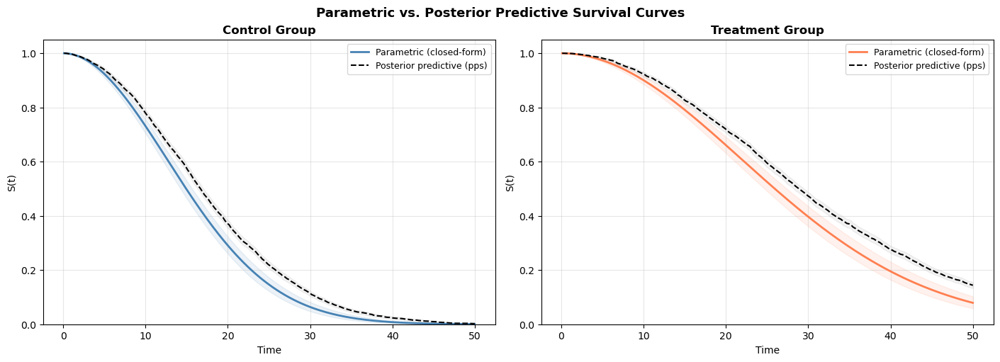
The two approaches should agree closely. The parametric curves are smooth (computed from exact formulas); the posterior predictive curves are step-like (computed from a finite sample of simulated times). The agreement validates that our closed-form calculations are correct.
TipWhen to use which approach
The two approaches highlight two different perspectives on uncertainty quantification. In the closed form approah we sampled directly from the parameter estimates of the model and computed the solution to the model’s survival equation. The uncertainty arose from model based uncertainty about the parameters - this is an epistemic uncertainty. In the posterior predictive sampling we’re deriving survival curves from a ratio of events across the predicted time-intervals and bootstrapping across the predictions. The latter approach aims to account for the irreducible outcome variability. This is an aleatoric uncertainty. The two approaches answer slightly different questions
Parametric (closed-form): Use when you have a standard distribution (Weibull, exponential, etc.) and want smooth, precise curves with minimal computational cost. The formulas are exact.
Posterior predictive (kind="response"): Use when: - You’re working with a distribution that lacks clean analytic survival/hazard functions - You want to incorporate predictive uncertainty for new subjects, not just parameter uncertainty
In practice, for a simple Weibull AFT model the parametric approach is clearly preferred as it’s faster and smoother. The posterior predictive approach becomes essential for understanding the extent of unmodelled uncertainty.
Applied example: employee retention
Now let’s apply these methods to a real-world problem. We’ll model employee retention using a dataset tracking how long employees stayed before leaving (or being right-censored at the end of the observation window). People Analytics often has a focus on process and change dynamics. Whether we assess career trajectories in terms of time-to-promotion or time-to-attrition, we must track the development of an individual within a role, within a company and team. Understanding how these processes evolve and what factors of the time or place accelerate the outcomes is essential to organisational design and people management.
The example is borrowed from Keith McNulty’s Handbook of Regression Modeling in People Analytics.
Data exploration
In our dataset we record a number of “demographic” like variables, but additionally we have surveyed each individual to record their sentiment and whether they intend to leave. These are standard measures in typical employee-engagement surveys.
retention_df = pd.read_csv("data/retention.csv")
print(f"Dataset: {len(retention_df)} employees")
print(f"\nOutcome:")
print(f" Left (event): {retention_df['left'].sum()} ({100*retention_df['left'].mean():.1f}%)")
print(
f" Stayed (censored): {(1 - retention_df['left']).sum()} ({100*(1-retention_df['left'].mean()):.1f}%)"
)
print(f"\nTime range: {retention_df['month'].min()} to {retention_df['month'].max()} months")
print(f"\nCovariates:")
print(f" Gender: {retention_df['gender'].value_counts().to_dict()}")
print(f" Level: {retention_df['level'].value_counts().to_dict()}")
print(f" Field: {retention_df['field'].nunique()} unique fields")
print(
f" Sentiment: {retention_df['sentiment'].min()}-{retention_df['sentiment'].max()} (continuous)"
)
print(
f" Intention: {retention_df['intention'].min()}-{retention_df['intention'].max()} (continuous)"
)Dataset: 3770 employees
Outcome:
Left (event): 1354 (35.9%)
Stayed (censored): 2416 (64.1%)
Time range: 1 to 12 months
Covariates:
Gender: {'M': 2603, 'F': 1167}
Level: {'Low': 2519, 'Medium': 787, 'High': 464}
Field: 6 unique fields
Sentiment: 1-10 (continuous)
Intention: 1-10 (continuous)The thought is that these features will appropriately stratify the population and give us insight into the risk of attrition for different types of employee. These insights should help us anticipate future needs across the various employee profiles. It is natural to think that different careers accumulate risk more or less quickly. Stresses in one position might considerably outweigh the risks in another. Some work might be seasonal or age dependent. It is insight into the factors which accelerate attrition events that we want to understand.
fig, axes = plt.subplots(1, 2, figsize=(14, 5), layout="constrained")
# Tenure distribution by event status
for event_val, label, color in [(1, "Left", "coral"), (0, "Stayed", "steelblue")]:
subset = retention_df[retention_df["left"] == event_val]
axes[0].hist(subset["month"], bins=12, alpha=0.5, density=True, label=label, color=color)
axes[0].set_xlabel("Month")
axes[0].set_ylabel("Density")
axes[0].set_title("Tenure Distribution by Departure Status")
axes[0].legend()
axes[0].grid(True, alpha=0.3)
# Event rate by field
field_rates = retention_df.groupby("field")["left"].mean().sort_values()
axes[1].barh(field_rates.index, field_rates.values, color="steelblue", alpha=0.7)
axes[1].set_xlabel("Proportion Who Left")
axes[1].set_title("Departure Rate by Field")
axes[1].grid(True, alpha=0.3, axis="x");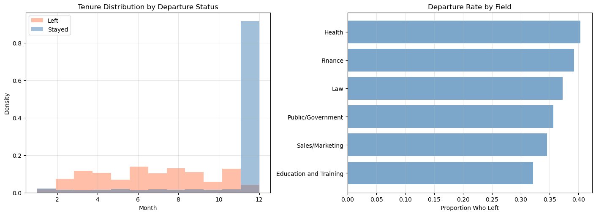
Preparing the data
Again we need to specify the censored observations to make the data ready for modelling.
# Create censoring indicator
retention_df["censoring"] = np.where(retention_df["left"] == 1, "none", "right")Model 1: retention Weibull AFT
We start with a Weibull AFT model including gender, seniority level, field, employee sentiment, and intention to leave as predictors.
def fit_retention_model(retention_df, formula, likelihood="weibull", noncentred=True):
"""Fit a parametric survival model to the retention data."""
if likelihood == "weibull":
family = "weibull"
elif likelihood == "exponential":
family = "exponential"
else:
raise ValueError("Unsupported likelihood. Choose 'weibull' or 'exponential'")
model = bmb.Model(formula, data=retention_df, family=family, link="log", noncentered=noncentred)
print(f"\n{'='*60}")
print(f"Fitting {likelihood.upper()} AFT model")
print(f"{'='*60}")
print(model)
idata = model.fit(
chains=4,
random_seed=42,
target_accept=0.95,
inference_method="nutpie",
)
return idata, modelformula_base = (
"censored(month, censoring) ~ C(gender) + C(level) + C(field) + sentiment + intention"
)
idata_weibull, model_weibull = fit_retention_model(retention_df, formula_base, likelihood="weibull")
============================================================
Fitting WEIBULL AFT model
============================================================
Formula: censored(month, censoring) ~ C(gender) + C(level) + C(field) + sentiment + intention
Family: weibull
Link: mu = log
Observations: 3770
Priors:
target = mu
Common-level effects
Intercept ~ Normal(mu: 0.0, sigma: 13.3078)
C(gender) ~ Normal(mu: 0.0, sigma: 5.4077)
C(level) ~ Normal(mu: [0. 0.], sigma: [5.3093 6.1513])
C(field) ~ Normal(mu: [0. 0. 0. 0. 0.], sigma: [ 5.2512 11.8505 13. 7.2383 8.4543])
sentiment ~ Normal(mu: 0.0, sigma: 1.3939)
intention ~ Normal(mu: 0.0, sigma: 1.1996)
Auxiliary parameters
alpha ~ HalfCauchy(beta: 1.0)Sampler Progress
Total Chains: 4
Active Chains: 0
Finished Chains: 4
Sampling for now
Estimated Time to Completion: now
| Progress | Draws | Divergences | Step Size | Gradients/Draw |
|---|---|---|---|---|
| 2000 | 0 | 0.39 | 15 | |
| 2000 | 0 | 0.37 | 15 | |
| 2000 | 0 | 0.37 | 7 | |
| 2000 | 0 | 0.36 | 15 |
az.summary(idata_weibull)| mean | sd | hdi_3% | hdi_97% | mcse_mean | mcse_sd | ess_bulk | ess_tail | r_hat | |
|---|---|---|---|---|---|---|---|---|---|
| alpha_log__ | 0.519 | 0.026 | 0.470 | 0.566 | 0.000 | 0.000 | 3046.0 | 2881.0 | 1.0 |
| Intercept | 3.373 | 0.118 | 3.156 | 3.594 | 0.002 | 0.002 | 2926.0 | 2512.0 | 1.0 |
| C(gender)[M] | -0.010 | 0.035 | -0.076 | 0.054 | 0.001 | 0.001 | 4839.0 | 3058.0 | 1.0 |
| C(level)[Low] | -0.102 | 0.054 | -0.199 | 0.001 | 0.001 | 0.001 | 2395.0 | 2552.0 | 1.0 |
| C(level)[Medium] | -0.070 | 0.060 | -0.191 | 0.035 | 0.001 | 0.001 | 2823.0 | 2727.0 | 1.0 |
| C(field)[Finance] | -0.153 | 0.040 | -0.229 | -0.079 | 0.001 | 0.001 | 3480.0 | 3083.0 | 1.0 |
| C(field)[Health] | -0.151 | 0.077 | -0.293 | -0.004 | 0.001 | 0.001 | 4287.0 | 2772.0 | 1.0 |
| C(field)[Law] | -0.043 | 0.088 | -0.205 | 0.119 | 0.001 | 0.001 | 4385.0 | 3327.0 | 1.0 |
| C(field)[Public/Government] | -0.082 | 0.053 | -0.180 | 0.016 | 0.001 | 0.001 | 3763.0 | 3092.0 | 1.0 |
| C(field)[Sales/Marketing] | -0.066 | 0.061 | -0.172 | 0.054 | 0.001 | 0.001 | 3872.0 | 3367.0 | 1.0 |
| sentiment | 0.018 | 0.009 | 0.001 | 0.035 | 0.000 | 0.000 | 4076.0 | 2762.0 | 1.0 |
| intention | -0.123 | 0.008 | -0.138 | -0.106 | 0.000 | 0.000 | 3447.0 | 3085.0 | 1.0 |
| alpha | 1.680 | 0.043 | 1.600 | 1.762 | 0.001 | 0.001 | 3046.0 | 2881.0 | 1.0 |
NoteReading the retention coefficients
Since this is an AFT model:
- Positive coefficients mean longer retention (the employee stays longer)
- Negative coefficients mean shorter retention (the employee leaves sooner)
sentimentandintentionare on their original scales, so a one-unit increase in sentiment has the indicated effect on log-time
For example, if the sentiment coefficient is positive, higher job satisfaction is associated with longer tenure. The employee’s “survival time” in the role is stretched or contracted as expectation for the role demands.
Model 2: exponential AFT
idata_exp_ret, model_exp_ret = fit_retention_model(
retention_df, formula_base, likelihood="exponential"
)
============================================================
Fitting EXPONENTIAL AFT model
============================================================
Formula: censored(month, censoring) ~ C(gender) + C(level) + C(field) + sentiment + intention
Family: exponential
Link: mu = log
Observations: 3770
Priors:
target = mu
Common-level effects
Intercept ~ Normal(mu: 0.0, sigma: 13.3078)
C(gender) ~ Normal(mu: 0.0, sigma: 5.4077)
C(level) ~ Normal(mu: [0. 0.], sigma: [5.3093 6.1513])
C(field) ~ Normal(mu: [0. 0. 0. 0. 0.], sigma: [ 5.2512 11.8505 13. 7.2383 8.4543])
sentiment ~ Normal(mu: 0.0, sigma: 1.3939)
intention ~ Normal(mu: 0.0, sigma: 1.1996)Sampler Progress
Total Chains: 4
Active Chains: 0
Finished Chains: 4
Sampling for now
Estimated Time to Completion: now
| Progress | Draws | Divergences | Step Size | Gradients/Draw |
|---|---|---|---|---|
| 2000 | 0 | 0.40 | 15 | |
| 2000 | 0 | 0.42 | 7 | |
| 2000 | 0 | 0.41 | 15 | |
| 2000 | 0 | 0.38 | 15 |
az.summary(idata_exp_ret)| mean | sd | hdi_3% | hdi_97% | mcse_mean | mcse_sd | ess_bulk | ess_tail | r_hat | |
|---|---|---|---|---|---|---|---|---|---|
| Intercept | 4.165 | 0.192 | 3.832 | 4.544 | 0.004 | 0.003 | 2372.0 | 2754.0 | 1.0 |
| C(gender)[M] | -0.015 | 0.057 | -0.124 | 0.094 | 0.001 | 0.001 | 4629.0 | 2786.0 | 1.0 |
| C(level)[Low] | -0.160 | 0.090 | -0.331 | -0.001 | 0.002 | 0.001 | 2139.0 | 2858.0 | 1.0 |
| C(level)[Medium] | -0.111 | 0.102 | -0.307 | 0.072 | 0.002 | 0.001 | 2303.0 | 2712.0 | 1.0 |
| C(field)[Finance] | -0.236 | 0.068 | -0.370 | -0.115 | 0.001 | 0.001 | 3145.0 | 2919.0 | 1.0 |
| C(field)[Health] | -0.234 | 0.128 | -0.467 | 0.005 | 0.002 | 0.002 | 3562.0 | 3084.0 | 1.0 |
| C(field)[Law] | -0.069 | 0.145 | -0.345 | 0.201 | 0.002 | 0.002 | 4035.0 | 3007.0 | 1.0 |
| C(field)[Public/Government] | -0.116 | 0.089 | -0.280 | 0.047 | 0.002 | 0.001 | 3243.0 | 3275.0 | 1.0 |
| C(field)[Sales/Marketing] | -0.104 | 0.102 | -0.298 | 0.089 | 0.002 | 0.001 | 3550.0 | 3324.0 | 1.0 |
| sentiment | 0.029 | 0.016 | -0.002 | 0.057 | 0.000 | 0.000 | 3712.0 | 3014.0 | 1.0 |
| intention | -0.189 | 0.014 | -0.213 | -0.162 | 0.000 | 0.000 | 2994.0 | 2501.0 | 1.0 |
Showing similar coefficient estimates.
Model 3: Weibull AFT with frailty (random effects)
Employees in different fields may share unobserved characteristics that affect retention, organizational culture, industry norms or career mobility patterns. A frailty model captures this by adding a random effect (random intercept) for field. This is the survival-analysis equivalent of a random-intercept multilevel model.
The frailty term absorbs unobserved heterogeneity between fields that isn’t captured by the fixed effect of field alone. It also provides partial pooling: fields with fewer observations borrow strength from the overall distribution, leading to more stable estimates.
formula_frailty = (
"censored(month, censoring) ~ C(gender) + C(level) + sentiment + intention + (1|field)"
)
idata_frailty, model_frailty = fit_retention_model(
retention_df, formula_frailty, likelihood="weibull", noncentred=False
)
============================================================
Fitting WEIBULL AFT model
============================================================
Formula: censored(month, censoring) ~ C(gender) + C(level) + sentiment + intention + (1|field)
Family: weibull
Link: mu = log
Observations: 3770
Priors:
target = mu
Common-level effects
Intercept ~ Normal(mu: 0.0, sigma: 13.0974)
C(gender) ~ Normal(mu: 0.0, sigma: 5.4077)
C(level) ~ Normal(mu: [0. 0.], sigma: [5.3093 6.1513])
sentiment ~ Normal(mu: 0.0, sigma: 1.3939)
intention ~ Normal(mu: 0.0, sigma: 1.1996)
Group-level effects
1|field ~ Normal(mu: 0.0, sigma: HalfNormal(sigma: 13.0974))
Auxiliary parameters
alpha ~ HalfCauchy(beta: 1.0)Sampler Progress
Total Chains: 4
Active Chains: 0
Finished Chains: 4
Sampling for 12 seconds
Estimated Time to Completion: now
| Progress | Draws | Divergences | Step Size | Gradients/Draw |
|---|---|---|---|---|
| 2000 | 0 | 0.29 | 15 | |
| 2000 | 1 | 0.31 | 15 | |
| 2000 | 0 | 0.31 | 15 | |
| 2000 | 0 | 0.30 | 15 |
az.summary(idata_frailty)| mean | sd | hdi_3% | hdi_97% | mcse_mean | mcse_sd | ess_bulk | ess_tail | r_hat | |
|---|---|---|---|---|---|---|---|---|---|
| alpha_log__ | 0.520 | 0.024 | 0.477 | 0.569 | 0.000 | 0.000 | 3496.0 | 3022.0 | 1.0 |
| Intercept | 3.285 | 0.116 | 3.071 | 3.502 | 0.003 | 0.002 | 1994.0 | 2706.0 | 1.0 |
| C(gender)[M] | -0.011 | 0.035 | -0.080 | 0.049 | 0.000 | 0.001 | 6937.0 | 2748.0 | 1.0 |
| C(level)[Low] | -0.099 | 0.052 | -0.200 | -0.003 | 0.001 | 0.001 | 2776.0 | 2834.0 | 1.0 |
| C(level)[Medium] | -0.069 | 0.059 | -0.182 | 0.040 | 0.001 | 0.001 | 2859.0 | 2981.0 | 1.0 |
| sentiment | 0.019 | 0.009 | 0.002 | 0.035 | 0.000 | 0.000 | 5512.0 | 3451.0 | 1.0 |
| intention | -0.123 | 0.008 | -0.139 | -0.107 | 0.000 | 0.000 | 4139.0 | 3023.0 | 1.0 |
| 1|field_sigma_log__ | -2.682 | 0.536 | -3.669 | -1.654 | 0.015 | 0.012 | 1357.0 | 1644.0 | 1.0 |
| 1|field[Education and Training] | 0.063 | 0.047 | -0.028 | 0.145 | 0.002 | 0.002 | 925.0 | 999.0 | 1.0 |
| 1|field[Finance] | -0.061 | 0.049 | -0.158 | 0.017 | 0.002 | 0.002 | 934.0 | 951.0 | 1.0 |
| 1|field[Health] | -0.038 | 0.061 | -0.160 | 0.070 | 0.002 | 0.002 | 1842.0 | 1435.0 | 1.0 |
| 1|field[Law] | 0.014 | 0.061 | -0.088 | 0.143 | 0.002 | 0.002 | 1771.0 | 1323.0 | 1.0 |
| 1|field[Public/Government] | -0.002 | 0.051 | -0.092 | 0.096 | 0.002 | 0.002 | 1212.0 | 1297.0 | 1.0 |
| 1|field[Sales/Marketing] | 0.009 | 0.054 | -0.086 | 0.116 | 0.002 | 0.002 | 1298.0 | 1482.0 | 1.0 |
| alpha | 1.683 | 0.041 | 1.606 | 1.760 | 0.001 | 0.001 | 3496.0 | 3022.0 | 1.0 |
| 1|field_sigma | 0.079 | 0.049 | 0.015 | 0.165 | 0.001 | 0.002 | 1357.0 | 1644.0 | 1.0 |
Here we see the estimated posterior parameterisation of the random effects model. The rank order and direction of the coefficients by field are generally a useful way to assess risk of attrition. Additionally, the 1|field_sigma parameter is useful to check the degree of variability in field specific effects.
Model comparison
with model_weibull.backend.model:
idata_weibull = pm.compute_log_likelihood(idata_weibull)
with model_exp_ret.backend.model:
idata_exp_ret = pm.compute_log_likelihood(idata_exp_ret)
with model_frailty.backend.model:
idata_frailty = pm.compute_log_likelihood(idata_frailty)
compare_retention = az.compare(
{"Weibull": idata_weibull, "Exponential": idata_exp_ret, "Weibull + Frailty": idata_frailty},
ic="loo",
)
compare_retention| rank | elpd_loo | p_loo | elpd_diff | weight | se | dse | warning | scale | |
|---|---|---|---|---|---|---|---|---|---|
| Weibull + Frailty | 0 | -5822.525611 | 45.166022 | 0.000000 | 1.000000e+00 | 111.922493 | 0.000000 | False | log |
| Weibull | 1 | -5939.588337 | 53.667333 | 117.062726 | 0.000000e+00 | 116.595299 | 4.869469 | False | log |
| Exponential | 2 | -6054.066545 | 48.860486 | 231.540935 | 2.770927e-09 | 118.447278 | 14.995514 | False | log |
With the comparison of models we see that the random effects weibull model is to be preferred over the two alternatives.
Retention survival curves by field
Let’s put the survival curve machinery to work on the retention data. We use the posterior predictive approach here and pass in a DataFrame with the desired covariate profile and let the model simulate survival times for this individual. The EDA above showed that departure rates vary meaningfully across fields. Let’s see whether the fitted Weibull model captures these differences as distinct survival curves.
# 1. SETUP (Time grid and categories)
t_ret = np.linspace(0.1, 14, 150)
fields_to_plot = retention_df["field"].value_counts().head(5).index.tolist()
med_sent = retention_df["sentiment"].median()
med_intent = retention_df["intention"].median()
# 2. BATCH PREDICTION
pred_df = pd.DataFrame(
{
"month": [1.0] * 5,
"censoring": ["none"] * 5,
"gender": ["F"] * 5,
"level": ["Low"] * 5,
"field": fields_to_plot,
"sentiment": [med_sent] * 5,
"intention": [med_intent] * 5,
}
)
# kind="mean" returns the Weibull mean mu = E[T] for each profile
results = model_weibull.predict(idata_weibull, kind="response_params", data=pred_df, inplace=False)
mu_matrix = results.posterior["mu"].stack(sample=("chain", "draw")).values # Shape: (5, samples)
alpha_samples = (
idata_weibull.posterior["alpha"].stack(sample=("chain", "draw")).values
) # Shape: (samples,)
# 3. PLOTTING
fig, axes = plt.subplots(1, 2, figsize=(14, 5), layout="constrained")
colors = plt.cm.Set2(np.linspace(0, 1, len(fields_to_plot)))
for i, field_name in enumerate(fields_to_plot):
# Convert Bambi's mu (expected value) to Weibull scale: sigma = mu / Gamma(1 + 1/alpha)
sigma_samples = mu_matrix[i, :] / gamma_func(1 + 1 / alpha_samples)
# Broadcast for calculation
sig_2d = sigma_samples[:, np.newaxis]
alp_2d = alpha_samples[:, np.newaxis]
t_2d = t_ret[np.newaxis, :]
# S(t) = exp(-(t/sigma)^alpha)
S_dist = np.exp(-((t_2d / sig_2d) ** alp_2d))
# h(t) = (alpha/sigma) * (t/sigma)^(alpha-1)
h_dist = (alp_2d / sig_2d) * (t_2d / sig_2d) ** (alp_2d - 1)
# Summary Statistics
S_mean = S_dist.mean(axis=0)
S_hdi = np.percentile(S_dist, [2.5, 97.5], axis=0)
h_mean = h_dist.mean(axis=0)
h_hdi = np.percentile(h_dist, [2.5, 97.5], axis=0)
# Plotting
label = field_name[:15] + "..." if len(field_name) > 15 else field_name
axes[0].plot(t_ret, S_mean, color=colors[i], lw=2, label=label)
axes[0].fill_between(t_ret, S_hdi[0], S_hdi[1], color=colors[i], alpha=0.15)
axes[1].plot(t_ret, h_mean, color=colors[i], lw=2)
axes[1].fill_between(t_ret, h_hdi[0], h_hdi[1], color=colors[i], alpha=0.15)
# Formatting
axes[0].set_title("Retention Survival $S(t)$", fontweight="bold")
axes[0].set_ylabel("P(Still Employed)")
axes[0].set_ylim(0, 1.05)
axes[0].legend(title="Field", loc="lower left", fontsize=8)
axes[1].set_title("Departure Hazard $h(t)$", fontweight="bold")
axes[1].set_ylabel("Instantaneous Risk")
for ax in axes:
ax.set_xlabel("Month")
ax.grid(True, alpha=0.3)
plt.show()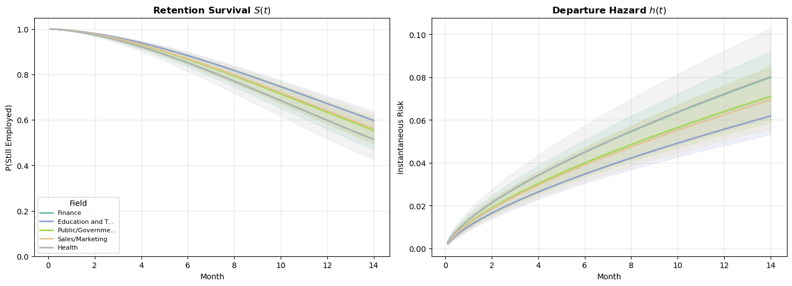
These curves translate the AFT coefficients into directly interpretable predictions. For an employee with median sentiment and intention scores, what is their probability of still being employed at month \(t\)? Fields with higher departure rates in the raw data produce lower survival curves here. The survival curves differ across fields, what does that tell us about how attrition accumulates differently? Is it front-loaded (new employees leave quickly or not at all)? Is it gradual (risk builds with tenure)? The Weibull parametric model of our hazard forces the accumulation to be monotonic, but the career paths show sharply different patterns of accumulating risk.
Understanding the coefficients across models
A retention model like this is most useful when HR needs to prioritize interventions. If the model shows that sentiment is a stronger predictor than seniority level, that argues for investing in engagement programs rather than promotion pipelines. If field-level random effects are large, it suggests that retention is partly a team/culture problem, not just an individual one. Consequently, any interventions should target organizational units rather than individuals.
fig, axes = plt.subplots(1, 2, figsize=(14, 5), layout="constrained")
# Fixed effects shared across all models
az.plot_forest(
[idata_weibull, idata_exp_ret, idata_frailty],
var_names=["sentiment", "intention", "C(level)", "C(gender)"],
model_names=["Weibull", "Exponential", "Weibull + Frailty"],
combined=True,
ax=axes[0],
)
axes[0].set_title("Fixed Effect Coefficients (AFT Scale)")
axes[0].axvline(0, color="gray", linestyle=":", alpha=0.5)
# Frailty random effects (only in frailty model)
az.plot_forest(idata_frailty, var_names=["1|field"], combined=True, ax=axes[1])
axes[1].set_title("Field Random Effects (Frailty Model)")
axes[1].axvline(0, color="gray", linestyle=":", alpha=0.5)
plt.show()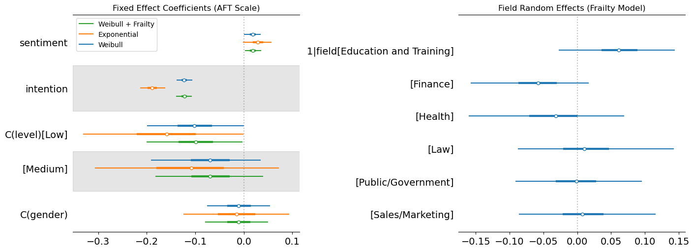
Here we’ve plotted the parameters derived across each model and pulled out the random effects for each field. This shows the stability of the fixed effects on sentiment across the three models, but demonstrates how the exponential model shows a more extreme effect on the intention covariate. This suggests that the exponential with the constant hazard is compensating for its inflexiblity by placing extra weight on the intention parameter, but the direction of the effect is the same. The stronger the stated intention to leave, the more likely we see departures.
For the frailty terms we see how Education and Training has a positive effect on the accelerated time, this suggests increased tenure within these fields over the baseline. This is plausibly related to vocational nature of these jobs and the limited outside options. Health and Finance also show directional effects but in the opposite direction, where there are plausibly more outside offers and more cut-throat business practices. This speeds up time-to-departure rather than reduces it. We can also see how the other industry random effects tend to hover around 0 suggesting minor to negligible modifications of the baseline expectation due to the partial pooling of our hierarchical model.
TipWhen to use frailty models
Frailty models are most useful when:
- You have grouped data with potential cluster-level heterogeneity (e.g., patients within hospitals, employees within departments)
- The number of groups is moderate to large (5+ groups) but group sizes may vary
- You want partial pooling: groups with fewer observations are shrunk toward the grand mean, borrowing strength from the overall distribution
- You want to account for unobserved confounders that vary across groups
They are less useful when you have very few groups (a fixed effect may be more appropriate) or when between-group variation is negligible.
Beyond the Weibull: alternative parametric families
So far we’ve relied on the Weibull (and its special case, the exponential) for all our continuous-time models. The Weibull is a powerful default, but it enforces a monotonic hazard. Real-world processes often have non-monotonic risk profiles: surgical recovery risk peaks in the first days then declines, employee attrition may spike early and then stabilize, and disease relapse can follow a hump-shaped pattern.
In this section we fit log-normal and log-logistic models to the same simulated data and compare how the choice of distributional family shapes the estimated hazard and survival curves. This highlights a fundamental feature of continuous-time parametric models: your distributional assumption is a substantive claim about the shape of risk over time, not just a technical convenience.
To fit these alternative families in Bambi, we use its custom family mechanism. Bambi ships with built-in support for common families (Gaussian, Bernoulli, Poisson, Weibull, etc.), but survival analysis often calls for distributions that aren’t included out of the box. Bambi’s custom family lets you define any likelihood you need by specifying:
- A
Likelihoodobject: Declares the distribution name, its parameters, and which parameter the linear predictor targets (the “parent”). - A
Familyobject: Wraps the likelihood and specifies the link function for the parent parameter. - Priors: For any auxiliary parameters (shape, scale, etc.) that aren’t modeled by the regression formula.
For distributions that PyMC already knows (like the log-normal), you only need steps 1–3. For distributions PyMC doesn’t have (like the log-logistic), you also provide a custom dist class with logp and logcdf methods. This is required by PyMC to evaluate the likelihood. The logcdf is needed because censored observations contribute their survival probability \(S(t) = 1 - F(t)\) to the likelihood rather than the density \(f(t)\).
Below we demonstrate both cases.
Log-normal
The log-normal distribution arises when \(\log(T)\) is normally distributed. Its key properties for survival analysis:
- Non-monotonic hazard: The hazard rises initially, reaches a peak, then declines toward zero. This makes it suitable for processes where risk increases early on but diminishes for long-term survivors. For example, you can think of recovery times from surgery, or time to relapse for certain cancers.
- AFT only: The log-normal does not satisfy the proportional-hazards assumption, so coefficients have only the AFT (time ratio) interpretation.
- Heavier right tail than the Weibull, which can be appropriate when some subjects survive much longer than the bulk.
Since PyMC already includes the log-normal distribution, we only need to declare the likelihood and family:
# 1. Define the Likelihood (mu = location, sigma = scale)
lognormal_likelihood = bmb.Likelihood(name="LogNormal", params=["mu", "sigma"], parent="mu")
# 2. Define the Family
lognormal_family = bmb.Family(name="lognormal", likelihood=lognormal_likelihood, link="identity")
# 3. Define the Prior for sigma (must be positive, e.g., HalfNormal or Exponential)
# We use a dictionary where the key matches the param name in the likelihood
my_priors = {"sigma": bmb.Prior("HalfNormal", sigma=1)}
# 4. Fit the model
model_lognorm = bmb.Model(
"censored(time, censoring) ~ treatment + age",
data=df,
family=lognormal_family,
priors=my_priors,
)
print(model_lognorm)
idata_lognormal = model_lognorm.fit(
chains=4,
random_seed=42,
target_accept=0.95,
idata_kwargs={"log_likelihood": True},
)Initializing NUTS using jitter+adapt_diag... Formula: censored(time, censoring) ~ treatment + age
Family: lognormal
Link: mu = identity
Observations: 1000
Priors:
target = mu
Common-level effects
Intercept ~ Normal(mu: 0.0, sigma: 3.5428)
treatment ~ Normal(mu: 0.0, sigma: 5.0)
age ~ Normal(mu: 0.0, sigma: 2.5055)
Auxiliary parameters
sigma ~ HalfNormal(sigma: 1.0)Multiprocess sampling (4 chains in 4 jobs)
NUTS: [sigma, Intercept, treatment, age]/home/tomas/Desktop/oss/bambinos/bambi/.pixi/envs/dev/lib/python3.13/site-packages/pymc/step_methods/hmc/quadpotential.py:316: RuntimeWarning: overflow encountered in dot
return 0.5 * np.dot(x, v_out)Sampling 4 chains for 1_000 tune and 1_000 draw iterations (4_000 + 4_000 draws total) took 2 seconds.az.summary(idata_lognormal)| mean | sd | hdi_3% | hdi_97% | mcse_mean | mcse_sd | ess_bulk | ess_tail | r_hat | |
|---|---|---|---|---|---|---|---|---|---|
| sigma | 0.682 | 0.017 | 0.650 | 0.713 | 0.000 | 0.000 | 4613.0 | 2858.0 | 1.0 |
| Intercept | 2.725 | 0.030 | 2.671 | 2.785 | 0.000 | 0.000 | 4899.0 | 2774.0 | 1.0 |
| treatment | 0.575 | 0.044 | 0.493 | 0.656 | 0.001 | 0.001 | 5281.0 | 2892.0 | 1.0 |
| age | -0.385 | 0.022 | -0.428 | -0.345 | 0.000 | 0.000 | 5099.0 | 3045.0 | 1.0 |
Log-logistic
The log-logistic distribution arises when \(\log(T)\) follows a logistic distribution. It shares several features with the log-normal but has some distinct advantages:
- Non-monotonic hazard: Like the log-normal, the hazard can rise and then fall, but the log-logistic has a closed-form survival function \(S(t) = 1/(1 + (t/\sigma)^{1/\alpha})\), which makes computation simpler.
- AFT only: No proportional hazards representation.
- Proportional odds: The log-logistic is the only common survival distribution that satisfies the proportional odds assumption, which can be useful when odds ratios are the natural estimand.
- Common in economics and social science: Often used for modelling duration data (unemployment spells, time to adoption of a technology) where the hazard is hump-shaped.
PyMC does not include the log-logistic distribution, so we need to define a custom distribution class with logp and logcdf methods. The logcdf is essential: for censored observations, the likelihood contribution is \(S(t_i) = 1 - F(t_i)\), which PyMC computes from the CDF.
# 1. The Wrapper Class with **kwargs to handle PyMC internal arguments
class LogLogisticWrapper:
@staticmethod
def logp(value, mu, alpha, **kwargs): # Added **kwargs
z = (pt.log(value) - mu) / alpha
return z - pt.log(alpha) - pt.log(value) - 2 * pt.log1p(pt.exp(z))
@staticmethod
def logcdf(value, mu, alpha, **kwargs): # Added **kwargs
z = (pt.log(value) - mu) / alpha
return -pt.log1p(pt.exp(-z))
@classmethod
def dist(cls, mu, alpha, **kwargs):
return pm.CustomDist.dist(mu, alpha, logp=cls.logp, logcdf=cls.logcdf, **kwargs)
# 2. Define the Likelihood and Family
loglogistic_likelihood = bmb.Likelihood(
name="LogLogistic", params=["mu", "alpha"], parent="mu", dist=LogLogisticWrapper
)
log_logistic_family = bmb.Family(
name="loglogistic", likelihood=loglogistic_likelihood, link="identity"
)
# 3. Define Priors
# Using a slightly informative HalfNormal for alpha (the scale/shape parameter)
priors = {"alpha": bmb.Prior("HalfNormal", sigma=1)}
# 4. Build and Fit
model_loglogistic = bmb.Model(
"censored(time, censoring) ~ treatment + age",
data=df,
family=log_logistic_family,
priors=priors,
)
idata_loglogistic = model_loglogistic.fit(target_accept=0.9, idata_kwargs={"log_likelihood": True})Initializing NUTS using jitter+adapt_diag...
Multiprocess sampling (4 chains in 4 jobs)
NUTS: [alpha, Intercept, treatment, age]Sampling 4 chains for 1_000 tune and 1_000 draw iterations (4_000 + 4_000 draws total) took 1 seconds.az.summary(idata_loglogistic, var_names=["Intercept", "treatment", "age", "alpha"])| mean | sd | hdi_3% | hdi_97% | mcse_mean | mcse_sd | ess_bulk | ess_tail | r_hat | |
|---|---|---|---|---|---|---|---|---|---|
| Intercept | 2.775 | 0.027 | 2.721 | 2.825 | 0.000 | 0.000 | 4090.0 | 2968.0 | 1.0 |
| treatment | 0.573 | 0.040 | 0.495 | 0.645 | 0.001 | 0.001 | 3615.0 | 2878.0 | 1.0 |
| age | -0.389 | 0.020 | -0.425 | -0.350 | 0.000 | 0.000 | 4141.0 | 2954.0 | 1.0 |
| alpha | 0.363 | 0.010 | 0.344 | 0.383 | 0.000 | 0.000 | 4211.0 | 3018.0 | 1.0 |
Comparing parametric families
Having fit Weibull, log-normal, and log-logistic models to the same data, we can now visualize how these distributional assumptions shape the estimated hazard and survival curves. Each family imposes a different structural constraint on the hazard:
- Weibull: Yields a monotonic hazard, either always increasing, always decreasing, or constant. Determined by a single shape parameter.
- Log-normal: Hump-shaped hazard. Rises to a peak then declines toward zero. Appropriate when long-term survivors face diminishing risk.
- Log-logistic: Also hump-shaped, but with heavier tails than the log-normal. The hazard declines more slowly, reflecting sustained (though decreasing) risk.
The plot below shows all three fitted models for the baseline profile (control group, average age), with 94% credible intervals. Differences between the curves reflect the structural assumptions of each family, not just statistical uncertainty.
Code
def lognormal_survival_curves(model, idata, t_grid, covariate_values):
"""Compute survival and hazard curves from a log-normal AFT posterior."""
from scipy.stats import norm
post = idata.posterior
predictions = model.predict(
idata, kind="response_params", inplace=False, data=pd.DataFrame(covariate_values, index=[0])
)
mu_samples = predictions["posterior"]["mu"].values.flatten()
sigma_samples = post["sigma"].values.flatten()
mu_2d = mu_samples[:, np.newaxis]
sigma_2d = sigma_samples[:, np.newaxis]
t_2d = t_grid[np.newaxis, :]
# Log-normal: S(t) = 1 - Phi((log(t) - mu) / sigma)
z = (np.log(t_2d) - mu_2d) / sigma_2d
survival = 1 - norm.cdf(z)
# Hazard: f(t) / S(t), where f(t) = phi(z) / (t * sigma)
pdf = norm.pdf(z) / (t_2d * sigma_2d)
hazard = pdf / np.maximum(survival, 1e-12)
return {"survival": survival, "hazard": hazard, "t": t_grid}
def loglogistic_survival_curves(model, idata, t_grid, covariate_values):
"""Compute survival and hazard curves from a log-logistic AFT posterior."""
from scipy.special import expit
post = idata.posterior
predictions = model.predict(
idata, kind="response_params", inplace=False, data=pd.DataFrame(covariate_values, index=[0])
)
mu_samples = predictions["posterior"]["mu"].values.flatten()
alpha_samples = post["alpha"].values.flatten()
mu_2d = mu_samples[:, np.newaxis]
alpha_2d = alpha_samples[:, np.newaxis]
t_2d = t_grid[np.newaxis, :]
# Log-logistic: S(t) = 1 / (1 + exp(z)), where z = (log(t) - mu) / alpha
z = (np.log(t_2d) - mu_2d) / alpha_2d
survival = 1 / (1 + np.exp(z))
# Hazard: f(t) / S(t) = exp(z) / (alpha * t * (1 + exp(z)))
hazard = np.exp(z) / (alpha_2d * t_2d * (1 + np.exp(z)))
return {"survival": survival, "hazard": hazard, "t": t_grid}
# Compute curves for baseline profile (control, average age)
t_compare = np.linspace(0.1, 50, 300)
cov_baseline = {"treatment": 0, "age": 0}
curves_weibull = weibull_survival_curves(model_aft, idata_aft, t_compare, cov_baseline)
curves_lognorm = lognormal_survival_curves(model_lognorm, idata_lognormal, t_compare, cov_baseline)
curves_loglog = loglogistic_survival_curves(
model_loglogistic, idata_loglogistic, t_compare, cov_baseline
)
# True curves from the known DGP (Weibull, baseline profile)
scale_true_baseline = np.exp(intercept_true)
h_true = (shape_true / scale_true_baseline) * (t_compare / scale_true_baseline) ** (shape_true - 1)
s_true = np.exp(-((t_compare / scale_true_baseline) ** shape_true))
fig, axes = plt.subplots(1, 2, figsize=(14, 5), layout="constrained")
families = [
(curves_weibull, "Weibull", "steelblue"),
(curves_lognorm, "Log-Normal", "coral"),
(curves_loglog, "Log-Logistic", "seagreen"),
]
for curves, label, color in families:
# Hazard
h_mean = np.mean(curves["hazard"], axis=0)
h_lo, h_hi = np.quantile(curves["hazard"], [0.03, 0.97], axis=0)
axes[0].plot(t_compare, h_mean, color=color, linewidth=2, label=label)
axes[0].fill_between(t_compare, h_lo, h_hi, color=color, alpha=0.15)
# Survival
s_mean = np.mean(curves["survival"], axis=0)
s_lo, s_hi = np.quantile(curves["survival"], [0.03, 0.97], axis=0)
axes[1].plot(t_compare, s_mean, color=color, linewidth=2, label=label)
axes[1].fill_between(t_compare, s_lo, s_hi, color=color, alpha=0.15)
# Overlay true curves
axes[0].plot(t_compare, h_true, "k--", linewidth=2, label="True (Weibull DGP)")
axes[1].plot(t_compare, s_true, "k--", linewidth=2, label="True (Weibull DGP)")
axes[0].set_xlabel("Time", fontsize=12)
axes[0].set_ylabel("Hazard Rate", fontsize=12)
axes[0].set_title("Hazard Functions by Parametric Family", fontsize=13, fontweight="bold")
axes[0].legend(fontsize=10)
axes[0].grid(True, alpha=0.3)
axes[0].set_ylim(bottom=0)
axes[1].set_xlabel("Time", fontsize=12)
axes[1].set_ylabel("Survival Probability", fontsize=12)
axes[1].set_title("Survival Functions by Parametric Family", fontsize=13, fontweight="bold")
axes[1].legend(fontsize=10)
axes[1].grid(True, alpha=0.3)
axes[1].set_ylim(0, 1.05);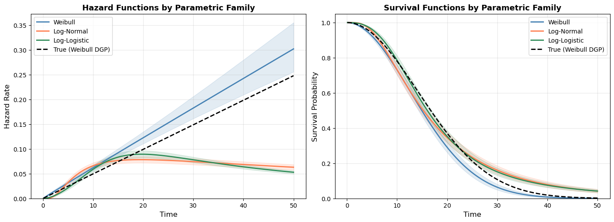
The black dashed line shows the true data-generating process (a Weibull). The hazard panel is the most revealing: the Weibull fit tracks the true monotonically increasing hazard closely, while the log-normal and log-logistic impose a hump-shaped hazard that peaks and then declines. These models should show a structural mismatch with the DGP. Comparing models on LOO will favor the Weibull: not because it has more parameters, but because its structural assumption happens to match reality.
The survival panel shows that all three models broadly agree on the overall survival trajectory, which makes sense because they’re fitting the same data, after all. But they diverge in the tails, where the structural assumptions matter most and data is sparsest. The log-normal and log-logistic overestimate survival at late times because their declining hazards imply a slower accumulation of risk than the true DGP.
We can also formally compare model fit using LOO:
comparison = az.compare(
{"Weibull": idata_aft, "LogNormal": idata_lognormal, "LogLogistic": idata_loglogistic}, ic="loo"
)
comparison| rank | elpd_loo | p_loo | elpd_diff | weight | se | dse | warning | scale | |
|---|---|---|---|---|---|---|---|---|---|
| Weibull | 0 | -3418.312076 | 4.262484 | 0.000000 | 9.527584e-01 | 34.348914 | 0.000000 | False | log |
| LogLogistic | 1 | -3459.714765 | 4.116736 | 41.402690 | 4.724163e-02 | 36.673890 | 9.162771 | False | log |
| LogNormal | 2 | -3501.395513 | 5.493085 | 83.083438 | 2.997602e-15 | 39.322656 | 15.818520 | False | log |
Competing risks: when multiple processes accumulate simultaneously
The survival models we’ve built so far assume a single risk process i.e. one cause, one accumulating hazard, one event. But many real phenomena involve multiple, simultaneous risk processes each pushing toward their own distinct endpoint.
Consider a clinical trial tracking cardiovascular mortality. At any moment a patient is not only accumulating cardiovascular risk but also non-cardiovascular risk and perhaps infection, cancer or organ failure too. These processes run in parallel, and crucially, they compete: a patient who dies from non-cardiovascular causes is no longer at risk of cardiovascular death. Treating non-cardiovascular deaths as simple censoring without controlling for this other risk category is a naive single-cause approach. It implicitly assumes these other risks they tell us nothing about cardiovascular risk. But that is only valid if the two processes are unrelated, which in practice they rarely are.
This is the competing risks problem: an individual faces \(K\) distinct risk processes accumulating simultaneously, and we observe whichever event fires first. The statistical challenge is that each cause’s hazard contributes to the probability of surviving long enough to experience any event at all. The overall survival function is not determined by any single cause in isolation, it is determined by the sum of all competing cumulative hazards:
\[S(t) = \exp\!\left(-\sum_{k=1}^{K} H_k(t)\right)\]
This has a direct consequence for the likelihood. When we observe individual \(i\) still alive at time \(t_i\), that survival reflects the joint action of all \(K\) hazards, not just the one they eventually succumb to (or would have, had observation continued). Every individual informs every cause’s hazard through this shared survival term, even accounting for censored individuals.
The Cumulative Incidence Function (CIF) for cause \(k\) captures this properly:
\[F_k(t) = \int_0^t h_k(s) \cdot S(s) \, ds\]
This is not simply \(1 - S_k(t)\) from a cause-specific survival model. It is the probability of failing from cause \(k\) before time \(t\), accounting for the fact that competing causes may remove individuals from the risk set first. Summing CIFs across all causes and adding the overall survival gives back 1 at every time point gives us a coherent probability partition across the risk categories.
\[\sum_{k=1}^{K} F_k(t) + S(t) = 1\]
The Weibull competing risks model below encodes this structure directly in the likelihood. Two linear predictors, one per cause, feed into a single joint log-likelihood where both causes’ hazards appear in every observation’s survival contribution.
Let’s set up the data generating process:
# =========================================================
# FULL WEIBULL COMPETING RISKS EXAMPLE (Bambi + PyMC)
# =========================================================
# ---------------------------------------------------------------------
# 1. DATA GENERATING PROCESS (Weibull competing risks)
# ---------------------------------------------------------------------
rng = np.random.default_rng(123)
n = 2_000
age = rng.normal(65, 10, n)
sex = rng.binomial(1, 0.5, n).astype(float)
treatment = rng.binomial(1, 0.5, n)
age_c = age - 65
TRUE = {
# Cause 1
"intercept_1": -3.5,
"age_c_1": 0.03,
"sex_1": 0.50,
"trt_1": -1.00,
"alpha1": 1.5, # Weibull shape
# Cause 2
"intercept_2": -4.2,
"age_c_2": 0.02,
"sex_2": -0.30,
"trt_2": 0.00,
"alpha2": 1.2, # Weibull shape
}
mu1 = (
TRUE["intercept_1"] + TRUE["age_c_1"] * age_c + TRUE["sex_1"] * sex + TRUE["trt_1"] * treatment
)
mu2 = (
TRUE["intercept_2"] + TRUE["age_c_2"] * age_c + TRUE["sex_2"] * sex + TRUE["trt_2"] * treatment
)
H1 = np.exp(mu1)
H2 = np.exp(mu2)
alpha1 = TRUE["alpha1"]
alpha2 = TRUE["alpha2"]
# ---- Simulate latent Weibull times ----
u1 = rng.uniform(size=n)
u2 = rng.uniform(size=n)
T1 = (-np.log(u1) / H1) ** (1.0 / alpha1)
T2 = (-np.log(u2) / H2) ** (1.0 / alpha2)
t_event = np.minimum(T1, T2)
cause = np.where(T1 < T2, 1, 2)
# ---- Random right censoring ----
C = rng.uniform(0, 15, size=n)
time = np.minimum(t_event, C)
status = np.where(t_event <= C, cause, 0)
df = pd.DataFrame(
{
"time": time,
"status": status,
"age_c": age_c,
"sex": sex,
"treatment": np.where(treatment == 1, "B", "A"),
}
)
print("Event counts:") # Cause 0 = censored, 1 = Cardiovascular death, 2 = non-Cardiovascular death
print(df["status"].value_counts().rename({0: "censored", 1: "cv_death", 2: "noncv_death"}))
print(f"Censoring rate: {(status == 0).mean():.1%}")Event counts:
status
censored 1114
cv_death 680
noncv_death 206
Name: count, dtype: int64
Censoring rate: 55.7%Now we need to set up our custom likelihood. Building a competing risks model as a custom Bambi family requires us to do explicitly what standard single-risk models do behind the scenes: define the log-likelihood, declare the parameters, and wire the regression structure together. The payoff is full control over the probability model. The cost is that we must think carefully about three things: (1) how each observation’s cause-of-failure status enters the likelihood, (2) how the survival term couples the competing hazards together, and (3) how Bambi’s formula interface maps covariates onto the cause-specific parameters.
Code
# ---------------------------------------------------------------------
# 2. Shared cause indicators
# ---------------------------------------------------------------------
delta1_shared = pytensor.shared((df["status"] == 1).astype(float).values, name="delta1")
delta2_shared = pytensor.shared((df["status"] == 2).astype(float).values, name="delta2")
# ---------------------------------------------------------------------
# 3. Weibull competing risks log-likelihood
# ---------------------------------------------------------------------
def cr_weibull_logp(value, mu1, mu2, alpha1, alpha2):
H1 = pt.exp(mu1)
H2 = pt.exp(mu2)
log_t = pt.log(value)
# cause-specific log hazards
log_h1 = mu1 + pt.log(alpha1) + (alpha1 - 1.0) * log_t
log_h2 = mu2 + pt.log(alpha2) + (alpha2 - 1.0) * log_t
log_haz = delta1_shared * log_h1 + delta2_shared * log_h2
# survival contribution
log_surv = -H1 * value**alpha1 - H2 * value**alpha2
return log_haz + log_surv
def cr_weibull_dist(name, mu1, mu2, alpha1, alpha2, **kwargs):
return pm.CustomDist(
name,
mu1,
mu2,
alpha1,
alpha2,
logp=cr_weibull_logp,
**kwargs,
)
cr_likelihood = bmb.Likelihood(
name="CompetingRisksWeibull",
params=["mu1", "mu2", "alpha1", "alpha2"],
parent="mu1",
dist=cr_weibull_dist,
)
cr_family = bmb.Family(
name="competing_risks_weibull",
likelihood=cr_likelihood,
link={"mu1": "identity", "mu2": "identity"},
)
# ---------------------------------------------------------------------
# 4. Model specification
# ---------------------------------------------------------------------
formula = bmb.Formula(
"time ~ age_c + sex + treatment",
"mu2 ~ age_c + sex + treatment",
)
priors = {
# Cause 1 coefficients
"Intercept": bmb.Prior("Normal", mu=-3.5, sigma=2),
"age_c": bmb.Prior("Normal", mu=0, sigma=0.5),
"sex": bmb.Prior("Normal", mu=0, sigma=1),
"treatment": bmb.Prior("Normal", mu=0, sigma=1),
# Cause 2 coefficients
"mu2_Intercept": bmb.Prior("Normal", mu=-4.2, sigma=2),
"mu2_age_c": bmb.Prior("Normal", mu=0, sigma=0.5),
"mu2_sex": bmb.Prior("Normal", mu=0, sigma=1),
"mu2_treatment": bmb.Prior("Normal", mu=0, sigma=1),
# Weibull shapes (positive)
"alpha1": bmb.Prior("LogNormal", mu=0, sigma=0.5),
"alpha2": bmb.Prior("LogNormal", mu=0, sigma=0.5),
}
model = bmb.Model(
formula,
data=df,
family=cr_family,
priors=priors,
)
model.build()
# ---------------------------------------------------------------------
# 5. Sampling
# ---------------------------------------------------------------------
idata = model.fit(
draws=2000,
chains=4,
target_accept=0.9,
random_seed=42,
idata_kwargs={"log_likelihood": True},
)Initializing NUTS using jitter+adapt_diag...
Multiprocess sampling (4 chains in 4 jobs)
NUTS: [alpha1, alpha2, Intercept, age_c, sex, treatment, mu2_Intercept, mu2_age_c, mu2_sex, mu2_treatment]/home/tomas/Desktop/oss/bambinos/bambi/.pixi/envs/dev/lib/python3.13/site-packages/pymc/step_methods/hmc/quadpotential.py:316: RuntimeWarning: overflow encountered in dot
return 0.5 * np.dot(x, v_out)Sampling 4 chains for 1_000 tune and 2_000 draw iterations (4_000 + 8_000 draws total) took 7 seconds.The Pattern of Competing Risks Likelihoods
Let’s unpack what we’ve done in the code above a bit more. We initialize the observed as pytensor variables so that they are passed through to the custom likelihood. The delta vectors then act as selectors in the likelihood. They “switch on” the appropriate cause-specific hazard contribution for each individual. A censored individual has both deltas equal to zero, so their entire likelihood contribution comes from the survival term alone.
The likelihood itself also needs to account for the multiplicity of causes. Each observation contributes two kinds of terms to the log-likelihood: a hazard piece (what caused the event, if one occurred) and a survival piece (the fact that the individual survived all competing risks up to time t). The code separates these cleanly into log_haz and log_surv. The log_surv component is arguably the heart of the model. Every individual, regardless of which event they experienced (or whether they were censored), informs both cause-specific hazard processes through this term. This is the statistical core of competing risks. Surviving to time t means you haven’t yet succumbed to any of the competing causes. At each instance the likelihood is pulled between two explanations. The log_haz term contributes positively, rewarding the model for placing high cause-specific hazard where events are observed. While the log_surv term contributes negatively, penalising the model in proportion to the total accumulated risk. For censored individuals, the seesaw tips entirely to one side. Only the survival term contributes, and the model can only account for their continued survival by keeping cumulative hazard low.
The competing risks likelihood we’ve built here uses two Weibull processes, each with its own shape and scale. But nothing in the construction requires this symmetry. We could fit three, four, or K cause-specific Weibulls — the pattern is the same. Each cause contributes a cause-specific log-hazard (switched on by its delta indicator) and a cumulative hazard term to the shared survival function. Adding a third cause means adding a delta3, a log_h3, and a -H3 * value**alpha3 term to log_surv. The structure scales linearly and could use alternate distributions. The competing causes need not share the same parametric family. The survival term sums cause-specific cumulative hazards regardless of their distributional origin. You might pair a Weibull (monotonic hazard) for one cause with a log-normal (hump-shaped hazard) for another, reflecting genuinely different risk profiles. There is a huge range of flexibility and corresponding complexity when we begin to think of the array of competing causes that steer our fate.
Competing Risks and Bambi
Once we’ve establish the combination of the risks of interest, we’re ready to pass them through Bambi’s interface. We adapt the Wilkinson style notation and specify a two-part formula for both causes. Each cause share the same covariates but estimate separate effects. Age, sex, and treatment may accelerate or decelerate each cause differently. The first line targets mu (cause 1, e.g. CV death) by default; the second line explicitly targets mu2 (cause 2, e.g. non-CV death). This is a substantive modelling choice — we’re asserting that the same covariates are relevant for both causes, but their effects may differ in sign and magnitude.
Estimating the model yields the familiar posterior and posterior predictive distributions available to any Bambi model.
az.summary(idata)| mean | sd | hdi_3% | hdi_97% | mcse_mean | mcse_sd | ess_bulk | ess_tail | r_hat | |
|---|---|---|---|---|---|---|---|---|---|
| alpha1 | 1.560 | 0.047 | 1.473 | 1.652 | 0.001 | 0.001 | 7794.0 | 5867.0 | 1.0 |
| alpha2 | 1.103 | 0.065 | 0.987 | 1.230 | 0.001 | 0.001 | 8156.0 | 6299.0 | 1.0 |
| Intercept | -3.646 | 0.113 | -3.857 | -3.429 | 0.001 | 0.001 | 8398.0 | 5448.0 | 1.0 |
| age_c | 0.030 | 0.004 | 0.023 | 0.037 | 0.000 | 0.000 | 13100.0 | 5932.0 | 1.0 |
| sex | 0.364 | 0.078 | 0.227 | 0.513 | 0.001 | 0.001 | 14758.0 | 6013.0 | 1.0 |
| treatment[B] | -0.951 | 0.079 | -1.103 | -0.808 | 0.001 | 0.001 | 12331.0 | 5195.0 | 1.0 |
| mu2_Intercept | -4.024 | 0.170 | -4.335 | -3.695 | 0.002 | 0.002 | 10036.0 | 5980.0 | 1.0 |
| mu2_age_c | 0.024 | 0.007 | 0.012 | 0.037 | 0.000 | 0.000 | 13514.0 | 5521.0 | 1.0 |
| mu2_sex | -0.213 | 0.140 | -0.465 | 0.067 | 0.001 | 0.002 | 13932.0 | 5755.0 | 1.0 |
| mu2_treatment[B] | -0.051 | 0.139 | -0.309 | 0.211 | 0.001 | 0.002 | 11878.0 | 6381.0 | 1.0 |
Cumulative incidence functions
However, the natural inferential target is not the regression coefficients themselves but the Cumulative Incidence Function (CIF) i.e. the probability that an individual has experienced a specific cause of failure by time \(t\), given their covariate profile.
The CIF is the right quantity to report in a competing risks analysis for a subtle but important reason. The intuitive alternative of computing \(1 - S_k(t)\) from a cause-specific survival model will overstate the risk of each individual cause. It implicitly asks: what is the probability of CV death by time \(t\) in a world where non-CV death does not exist? That is not a useful clinical or policy question. Patients do not live in worlds where competing causes have been eliminated.
The CIF instead asks: what is the probability of CV death by time \(t\) in the real world, where the patient is simultaneously at risk of dying from other causes? Formally:
\[F_k(t \mid \mathbf{x}) = \int_0^t h_k(s \mid \mathbf{x}) \cdot S(s \mid \mathbf{x}) \, ds\]
The joint survival term \(S(s)\) inside the integral is doing the key work. It discounts the incidence of cause \(k\) at each moment \(s\) by the probability of having survived all causes up to that point. A patient who is likely to die early from a competing cause accumulates less incidence from the primary cause — not because their cause-specific hazard is lower, but because they are less likely to be alive and at risk.
This disentanglement matters practically. Suppose treatment B dramatically reduces CV mortality. In a naive single-cause analysis, this might appear to slightly increase non-CV mortality. The increase seems paradoxical if you expect the treatment to help, but consider how patients now live long enough to experience non-CV events they would previously never have reached. The CIFs make this transparent: CV incidence falls, non-CV incidence rises mechanically as a consequence, and the overall survival improvement is visible in both panels simultaneously.
Three properties make CIFs the preferred reporting standard in competing risks analyses:
Coherent probability accounting. The CIFs and the overall survival partition the probability space exhaustively at every time point: \(\sum_k F_k(t) + S(t) = 1\). You can read off, for any covariate profile and any time horizon, the probability of each outcome.
Sensitivity to both hazards. Because both \(h_1\) and \(h_2\) enter the survival term, the CIF for cause 1 responds to changes in the cause-2 hazard even when cause-2 coefficients are held fixed. This captures the real-world substitution between competing risks.
Direct policy relevance. In clinical trials, the CIF answers the question clinicians and patients actually care about: given this treatment and this patient profile, what is the probability of this specific bad outcome within five years? The cause-specific hazard ratio is a mechanistic quantity; the CIF is an absolute risk quantity grounded in real-world incidence.
Code
# ---------------------------------------------------------------------------
# Helper: compute CIFs from posterior draws
# ---------------------------------------------------------------------------
def compute_cif(t_grid, lambda1, lambda2, alpha1, alpha2):
"""
Numerically integrate the CIF for both causes over t_grid.
Parameters
----------
t_grid : (T,) array of evaluation times
lambda1 : (S,) posterior draws of cause-1 scale [exp(eta1)]
lambda2 : (S,) posterior draws of cause-2 scale [exp(eta2)]
alpha1 : (S,) posterior draws of cause-1 shape
alpha2 : (S,) posterior draws of cause-2 shape
Returns
-------
cif1, cif2 : each (S, T) — one CIF curve per posterior draw
survival : (S, T)
"""
S = len(lambda1)
T = len(t_grid)
# Broadcast: shapes (S, T)
t = t_grid[np.newaxis, :] # (1, T)
l1 = lambda1[:, np.newaxis] # (S, 1)
l2 = lambda2[:, np.newaxis]
a1 = alpha1[:, np.newaxis]
a2 = alpha2[:, np.newaxis]
# Weibull hazards (S, T)
h1 = l1 * a1 * t ** (a1 - 1)
h2 = l2 * a2 * t ** (a2 - 1)
# Joint survival (S, T)
surv = np.exp(-l1 * t**a1 - l2 * t**a2)
# Integrand for each cause (S, T)
integrand1 = h1 * surv
integrand2 = h2 * surv
# Trapezoidal integration along time axis → (S, T)
cif1 = np.zeros((S, T))
cif2 = np.zeros((S, T))
for j in range(1, T):
dt = t_grid[j] - t_grid[j - 1]
cif1[:, j] = cif1[:, j - 1] + 0.5 * (integrand1[:, j - 1] + integrand1[:, j]) * dt
cif2[:, j] = cif2[:, j - 1] + 0.5 * (integrand2[:, j - 1] + integrand2[:, j]) * dt
return cif1, cif2, surv
def extract_posterior_draws(idata, covariate_profile, df):
"""
Compute lambda1, lambda2 from posterior draws for a given covariate profile.
covariate_profile : dict, e.g. {"age_c": 0, "sex": 1, "treatment": "B"}
"""
post = idata.posterior
# Stack chains and draws → flat arrays
def flat(var):
return post[var].values.reshape(-1)
# Intercepts and slopes — cause 1
eta1 = flat("Intercept")
eta1 = eta1 + flat("age_c") * covariate_profile["age_c"]
eta1 = eta1 + flat("sex") * covariate_profile["sex"]
# treatment is a categorical contrast; bambi stores it as "treatment[treatment[B]]"
# find the right variable name
trt_var_1 = [v for v in post.data_vars if "treatment" in v and "mu2" not in v][0]
trt_var_2 = [v for v in post.data_vars if "treatment" in v and "mu2" in v][0]
trt_indicator = 1.0 if covariate_profile["treatment"] == "B" else 0.0
eta1 = eta1 + flat(trt_var_1) * trt_indicator
# Cause 2
eta2 = flat("mu2_Intercept")
eta2 = eta2 + flat("mu2_age_c") * covariate_profile["age_c"]
eta2 = eta2 + flat("mu2_sex") * covariate_profile["sex"]
eta2 = eta2 + flat(trt_var_2) * trt_indicator
lambda1 = np.exp(eta1)
lambda2 = np.exp(eta2)
alpha1 = flat("alpha1")
alpha2 = flat("alpha2")
return lambda1, lambda2, alpha1, alpha2
def cif_summary(cif, hdi_prob=0.89):
"""Return mean and HDI bounds across posterior draws."""
mean = cif.mean(axis=0)
hdi = az.hdi(cif, hdi_prob=hdi_prob)
return mean, hdi[:, 0], hdi[:, 1]
# ---------------------------------------------------------------------------
# Define covariate profiles to plot
# ---------------------------------------------------------------------------
profiles = {
"Male, Trt A, Age 65": {"age_c": 0, "sex": 1, "treatment": "A"},
"Male, Trt B, Age 65": {"age_c": 0, "sex": 1, "treatment": "B"},
"Female, Trt A, Age 65": {"age_c": 0, "sex": 0, "treatment": "A"},
"Female, Trt A, Age 75": {"age_c": 10, "sex": 0, "treatment": "A"},
}
t_grid = np.linspace(0.01, 15, 500)
# ---------------------------------------------------------------------------
# Plot: 2 rows (cause 1, cause 2) × 1 column, all profiles overlaid
# ---------------------------------------------------------------------------
fig, axes = plt.subplots(2, 1, figsize=(10, 9), sharex=True, layout="tight")
colours = ["C0", "C1", "C2", "C3"]
linestyles = ["-", "--", "-.", ":"]
for (label, profile), colour, ls in zip(profiles.items(), colours, linestyles):
lambda1, lambda2, alpha1, alpha2 = extract_posterior_draws(idata, profile, df)
cif1, cif2, surv = compute_cif(t_grid, lambda1, lambda2, alpha1, alpha2)
mean1, lo1, hi1 = cif_summary(cif1)
mean2, lo2, hi2 = cif_summary(cif2)
axes[0].plot(t_grid, mean1, color=colour, ls=ls, lw=2, label=label)
axes[0].fill_between(t_grid, lo1, hi1, color=colour, alpha=0.15)
axes[1].plot(t_grid, mean2, color=colour, ls=ls, lw=2, label=label)
axes[1].fill_between(t_grid, lo2, hi2, color=colour, alpha=0.15)
axes[0].set_ylabel("Cumulative Incidence", fontsize=12)
axes[0].set_title("Cause 1 — CV Death", fontsize=13, fontweight="bold")
axes[0].legend(fontsize=9, loc="upper left")
axes[0].set_ylim(0, None)
axes[0].grid(alpha=0.3)
axes[1].set_ylabel("Cumulative Incidence", fontsize=12)
axes[1].set_xlabel("Time", fontsize=12)
axes[1].set_title("Cause 2 — Non-CV Death", fontsize=13, fontweight="bold")
axes[1].legend(fontsize=9, loc="upper left")
axes[1].set_ylim(0, None)
axes[1].grid(alpha=0.3)
fig.suptitle(
"Posterior Cumulative Incidence Functions\n" "Weibull Competing Risks Model (89% HDI shading)",
fontsize=13,
y=1.01,
)
# ---------------------------------------------------------------------------
# Sanity check: F1(t) + F2(t) + S(t) ≈ 1 for one profile
# ---------------------------------------------------------------------------
profile = list(profiles.values())[0]
lambda1, lambda2, alpha1, alpha2 = extract_posterior_draws(idata, profile, df)
cif1, cif2, surv = compute_cif(t_grid, lambda1, lambda2, alpha1, alpha2)
partition = cif1.mean(0) + cif2.mean(0) + surv.mean(0)
print(f"\nSanity check — F1 + F2 + S at t=15: {partition[-1]:.6f} (should be ≈ 1)")
print(f"Max deviation from 1.0 across time grid: {np.abs(partition - 1).max():.2e}")
Sanity check — F1 + F2 + S at t=15: 0.999847 (should be ≈ 1)
Max deviation from 1.0 across time grid: 1.53e-04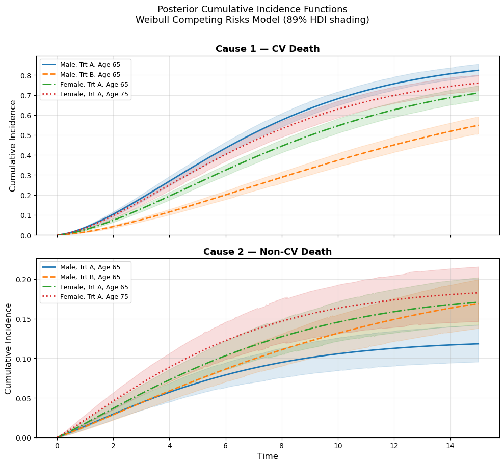
Treatment B appears protective against CV death, which is the clinically dominant outcome. See the decline in incidence for males with the treatment in the top panel. But note the reversal effect for Males on Trt A in the non-CV death, they have least incidence of experiencing death, this could reflect the interaction effect of the competing risks. The pool with of males on treatment A that survive to experience non-CV might be especially healthy. We would miss this interaction if we hadn’t modelled both phenomena.
Conclusion: the shape of accumulation
We began this series of notebooks with the Sorites paradox: one grain of sand is not a heap, but if you keep adding grains, eventually it becomes one. Survival analysis models this process and tracks the gradual accumulation of risk that culminates in a qualitative change.
In the discrete-time notebook, we approximated this accumulation period by period: each interval contributed a small increment of risk, and the person-period data structure made that accumulation explicit. The cloglog link ensured that our linear predictor operated on the natural currency of accumulated risk - the log-survival scale. That approach was flexible and assumption-light, but it discretized what is often a continuous process.
In this notebook, we moved to continuous time, where the accumulation of risk is described directly by the hazard function and its integral, the cumulative hazard. The parametric families we explored embody different theories about how risk accumulates:
- The Weibull says risk accumulates at a rate that is monotonically changing. Accelerating (like aging or material fatigue) or decelerating (like infant mortality or burn-in failure), or staying constant (the memoryless exponential).
- The log-normal says risk builds to a peak and then recedes. A process where the danger is greatest in a critical window, after which survivors face diminishing threat.
- The log-logistic tells a similar story, but with a heavier tail. The danger recedes more slowly, reflecting a process where risk lingers even as it diminishes.
- The Weibull competing-risk model outlines how multiple parametric hazards can be operating at once. Reducing one risk gives the others more time to accumulate. These interactions are key for many applications.
State-transition events i.e. qualitative changes in status occur everywhere: in clinical outcomes, in employee attrition, in mechanical failure, in the adoption of ideas. The challenge of survival analysis is to understand under what kind of process these changes emerge, and to let the data inform that understanding. The Bayesian approach gives us the tools to do this honestly: posterior uncertainty over parameters, model comparison via LOO, and the flexibility to encode our substantive beliefs about accumulation through the choice of model structure.
Discrete vs. continuous: choosing your approach
| Feature | Discrete-Time (Cloglog) | Continuous-Time (Parametric AFT) |
|---|---|---|
| Baseline hazard | Fully flexible (categorical dummies or splines) | Parametric (2 parameters) |
| Data format | Person-period expansion | One row per subject |
| Coefficient interpretation | Log hazard ratios (PH) | Log time ratios (AFT) |
| Time scale | Naturally discrete periods | Continuous (days, hours, etc.) |
| Extrapolation | No (beyond observed periods) | Yes (with caution) |
| Assumption risk | Minimal (baseline is flexible) | Misspecification if wrong family |
| Computational cost | Higher (expanded dataset) | Lower (compact data) |
| Extensions | Easy non-proportional hazards via interactions | Frailty models, custom families, Competing Risks |
In practice, the two approaches often give similar substantive answers. The choice depends on whether time is naturally discrete or continuous, whether you want parametric efficiency or nonparametric flexibility, and whether you prefer AFT or PH interpretation. Both are regression. Both model the accumulation of risk. They differ in how they represent time and what trade-offs they accept.
Dissolving the paradox?
Each of these methods is a different answer to the Sorites question: how does the heap come into being? All at once? Gradually and relentlessly? Through a critical period that passes? The choice of parametric family is not a technical nuisance, but a substantive claim about the developmental process that leads to the event. It matters when an event occurs, not merely that it does occur. The Sorites paradox endures because it asks for a sharp boundary where none exists. The proper question asks instead about the probable rate of state-transition over time. Time is a resource, and understanding how long each state is likely to last shapes how we act within it. The paradox results from a focus on the state-change rather than the process that yields the change.
Session info
%load_ext watermark
%watermark -n -u -v -iv -wLast updated: Fri Feb 27 2026
Python implementation: CPython
Python version : 3.13.9
IPython version : 9.6.0
pytensor : 2.38.0
bambi : 0.17.2.dev39+g7b5171366.d20260227
numpy : 2.3.3
pymc : 5.28.0
pandas : 2.3.3
matplotlib: 3.10.7
arviz : 0.22.0
Watermark: 2.5.0